Ortholog Divergence Report
Input: SLC24A1.valid.longest.fa · N sequences: 517 · Aligned length: 3306 codons
Reference: Oenanthe_melanoleuca
Quick risk overview
- LOW: 0
- INTERMEDIATE: 0
- HIGH: 133386


Composition & complexity per sequence
Saved as per_sequence_composition.csv. High low-complexity or repeat content can reduce BLAST sensitivity due to soft masking.
| id | GC | GC skew | CpG dens. | AA LCR frac | NT repeat frac | AA len | CDS len |
|---|---|---|---|---|---|---|---|
| Oenanthe_melanoleuca | 0.5 | -0.0404 | 0.01061 | 0.12273 | 0.73687 | 660 | 1980 |
| Pelobates_fuscus | 0.43976 | 0.02781 | 0.01178 | 0.25679 | 0.76178 | 736 | 2208 |
| Falco_naumanni | 0.47597 | -0.05207 | 0.01366 | 0.07436 | 0.73698 | 659 | 1977 |
| Catharus_ustulatus | 0.50606 | -0.04192 | 0.01213 | 0.13182 | 0.75 | 660 | 1980 |
| Otolemur_garnettii | 0.50935 | 0.02468 | 0.01503 | 0.13799 | 0.71328 | 1087 | 3261 |
| Mus_musculus | 0.52596 | 0.03421 | 0.01977 | 0.17522 | 0.68968 | 1130 | 3390 |
| Haliaeetus_leucocephalus | 0.46456 | -0.03463 | 0.01207 | 0.12971 | 0.72298 | 663 | 1989 |
| Galeopterus_variegatus | 0.52943 | 0.0 | 0.01889 | 0.18036 | 0.7142 | 1059 | 3177 |
| Calidris_pugnax | 0.49849 | -0.0292 | 0.0221 | 0.1491 | 0.71135 | 664 | 1992 |
| Phacochoerus_africanus | 0.51796 | 0.01327 | 0.01469 | 0.17432 | 0.72509 | 1067 | 3201 |
| Myotis_daubentonii | 0.52444 | 0.03277 | 0.01808 | 0.17244 | 0.73156 | 1125 | 3375 |
| Eumetopias_jubatus | 0.52541 | 0.01094 | 0.02027 | 0.16697 | 0.72323 | 1102 | 3306 |
| Chanos_chanos | 0.48539 | 0.02164 | 0.02193 | 0.25753 | 0.76027 | 730 | 2190 |
| Lagenorhynchus_obliquidens | 0.52562 | 0.05322 | 0.01473 | 0.18198 | 0.7076 | 1132 | 3396 |
| Corvus_moneduloides | 0.49797 | -0.03967 | 0.01166 | 0.08055 | 0.73708 | 658 | 1974 |
| Oryctolagus_cuniculus | 0.59081 | 0.02808 | 0.04001 | 0.17956 | 0.72237 | 1125 | 3375 |
| Chelmon_rostratus | 0.50488 | 0.02947 | 0.02558 | 0.22873 | 0.7643 | 717 | 2151 |
| Opisthocomus_hoazin | 0.48896 | -0.05749 | 0.01909 | 0.16566 | 0.72641 | 664 | 1992 |
| Neoarius_graeffei | 0.47357 | 0.02933 | 0.013 | 0.17339 | 0.72446 | 744 | 2232 |
| Melozone_crissalis | 0.50782 | -0.0427 | 0.01362 | 0.10287 | 0.73323 | 661 | 1983 |
| Trachemys_scripta_elegans | 0.48772 | -0.00103 | 0.02207 | 0.12782 | 0.69574 | 665 | 1995 |
| Danio_aesculapii | 0.48919 | 0.03683 | 0.02749 | 0.15811 | 0.76532 | 740 | 2220 |
| Zonotrichia_leucophrys_gambelii | 0.51286 | -0.04228 | 0.01665 | 0.10287 | 0.74231 | 661 | 1983 |
| Peromyscus_maniculatus_bairdii | 0.54262 | 0.03862 | 0.0238 | 0.2175 | 0.69216 | 1177 | 3531 |
| Takifugu_flavidus | 0.49976 | -0.01553 | 0.03204 | 0.15284 | 0.7278 | 687 | 2061 |
| Hemibagrus_wyckioides | 0.47581 | 0.01883 | 0.01479 | 0.15726 | 0.73701 | 744 | 2232 |
| Accipiter_gentilis | 0.46355 | -0.04555 | 0.01207 | 0.06787 | 0.73353 | 663 | 1989 |
| Hemiscyllium_ocellatum | 0.59063 | -0.10067 | 0.0447 | 0.34919 | 0.61189 | 925 | 2775 |
| Chelonia_mydas | 0.48825 | 0.00982 | 0.01823 | 0.08058 | 0.71127 | 695 | 2085 |
| Pezoporus_wallicus | 0.47699 | -0.03287 | 0.01265 | 0.11077 | 0.73849 | 659 | 1977 |
| Falco_cherrug | 0.47699 | -0.04984 | 0.01417 | 0.07436 | 0.72888 | 659 | 1977 |
| Pongo_pygmaeus | 0.51621 | 0.02014 | 0.0156 | 0.22752 | 0.71407 | 1090 | 3270 |
| Chaetura_pelagica | 0.47778 | -0.03594 | 0.01061 | 0.08636 | 0.74949 | 660 | 1980 |
| Mugil_cephalus | 0.50647 | 0.00441 | 0.03348 | 0.21687 | 0.78447 | 747 | 2241 |
| Cygnus_olor | 0.48048 | -0.025 | 0.01903 | 0.10961 | 0.73123 | 666 | 1998 |
| Pezoporus_occidentalis | 0.47597 | -0.03082 | 0.01366 | 0.11836 | 0.73748 | 659 | 1977 |
| Pseudorca_crassidens | 0.52912 | 0.03044 | 0.01487 | 0.18494 | 0.71716 | 1076 | 3228 |
| Phalacrocorax_carbo | 0.48293 | -0.04158 | 0.01808 | 0.08735 | 0.74096 | 664 | 1992 |
| Archocentrus_centrarchus | 0.47684 | 0.02095 | 0.01726 | 0.19074 | 0.72979 | 734 | 2202 |
| Aphelocoma_coerulescens | 0.50429 | -0.044 | 0.01211 | 0.10741 | 0.74281 | 661 | 1983 |
| Panthera_pardus | 0.52243 | 0.04553 | 0.01687 | 0.17435 | 0.72749 | 1107 | 3321 |
| Carlito_syrichta | 0.57598 | 0.036 | 0.03034 | 0.20706 | 0.75487 | 1077 | 3231 |
| Bubalus_kerabau | 0.5319 | 0.06105 | 0.01897 | 0.21207 | 0.73477 | 1160 | 3480 |
| Egretta_garzetta | 0.48544 | -0.04447 | 0.01909 | 0.11145 | 0.73343 | 664 | 1992 |
| Anguilla_anguilla | 0.55045 | -0.00164 | 0.03515 | 0.2473 | 0.71486 | 740 | 2220 |
| Nerophis_lumbriciformis | 0.53191 | -0.02222 | 0.04257 | 0.1844 | 0.75225 | 705 | 2115 |
| Chionomys_nivalis | 0.53032 | -0.00118 | 0.02074 | 0.20264 | 0.71159 | 1061 | 3183 |
| Channa_argus | 0.46723 | 0.02725 | 0.01274 | 0.14569 | 0.76709 | 707 | 2121 |
| Neopsephotus_bourkii | 0.47901 | -0.03273 | 0.01366 | 0.11684 | 0.73445 | 659 | 1977 |
| Sciurus_carolinensis | 0.51769 | 0.00839 | 0.01645 | 0.13873 | 0.72905 | 1074 | 3222 |
| Pipistrellus_kuhlii | 0.52589 | 0.04131 | 0.01876 | 0.14107 | 0.71905 | 1120 | 3360 |
| Misgurnus_anguillicaudatus | 0.4642 | 0.02554 | 0.02144 | 0.18605 | 0.72047 | 731 | 2193 |
| Chanodichthys_erythropterus | 0.47942 | 0.03019 | 0.02624 | 0.16554 | 0.77612 | 737 | 2211 |
| Delphinus_delphis | 0.52616 | 0.06154 | 0.01533 | 0.18734 | 0.71234 | 1153 | 3459 |
| Ochotona_princeps | 0.58636 | 0.03152 | 0.03122 | 0.14455 | 0.71606 | 1100 | 3300 |
| Numida_meleagris | 0.47109 | -0.02668 | 0.0171 | 0.08899 | 0.74862 | 663 | 1989 |
| Caloenas_nicobarica | 0.50253 | -0.05847 | 0.02788 | 0.1155 | 0.73961 | 658 | 1974 |
| Oncorhynchus_kisutch | 0.52381 | -0.02383 | 0.02868 | 0.26352 | 0.77577 | 721 | 2163 |
| Perca_fluviatilis | 0.47709 | -0.00101 | 0.014 | 0.18524 | 0.7588 | 691 | 2073 |
| Vidua_chalybeata | 0.51084 | -0.02665 | 0.01413 | 0.07867 | 0.73172 | 661 | 1983 |
| Tachysurus_fulvidraco | 0.46953 | 0.03626 | 0.01345 | 0.19624 | 0.71595 | 744 | 2232 |
| Corvus_kubaryi | 0.49696 | -0.03976 | 0.01115 | 0.1003 | 0.73607 | 658 | 1974 |
| Ursus_arctos | 0.53459 | 0.02175 | 0.02386 | 0.18873 | 0.73196 | 1118 | 3354 |
| Sorex_araneus | 0.63665 | -0.01365 | 0.05492 | 0.24408 | 0.74566 | 844 | 2532 |
| Cebidichthys_violaceus | 0.4883 | 0.0163 | 0.02014 | 0.17416 | 0.76404 | 712 | 2136 |
| Miniopterus_natalensis | 0.53222 | 0.00463 | 0.01943 | 0.20352 | 0.72186 | 1081 | 3243 |
| Solea_solea | 0.48958 | 0.02515 | 0.01895 | 0.19176 | 0.77462 | 704 | 2112 |
| Prionailurus_bengalensis | 0.51838 | 0.0422 | 0.01641 | 0.18596 | 0.74172 | 1097 | 3291 |
| Sylvia_atricapilla | 0.50922 | -0.05479 | 0.01496 | 0.09118 | 0.72347 | 669 | 2007 |
| Struthio_camelus | 0.46516 | -0.05172 | 0.01304 | 0.08872 | 0.74035 | 665 | 1995 |
| Chlorocebus_sabaeus | 0.51774 | 0.02168 | 0.01942 | 0.24113 | 0.72611 | 1099 | 3297 |
| Cynocephalus_volans | 0.52638 | 0.00354 | 0.01925 | 0.1527 | 0.71633 | 1074 | 3222 |
| Cercocebus_atys | 0.51754 | 0.01355 | 0.01861 | 0.22049 | 0.73224 | 1093 | 3279 |
| Mobula_hypostoma | 0.57997 | -0.04088 | 0.06478 | 0.07537 | 0.74345 | 942 | 2826 |
| Mastomys_coucha | 0.52495 | 0.04274 | 0.01772 | 0.15412 | 0.70948 | 1129 | 3387 |
| Ctenopharyngodon_idella | 0.47761 | 0.03788 | 0.02308 | 0.17096 | 0.78697 | 737 | 2211 |
| Callithrix_jacchus | 0.50917 | 0.08286 | 0.01651 | 0.28695 | 0.67794 | 1272 | 3816 |
| Notolabrus_celidotus | 0.48981 | -0.00787 | 0.01874 | 0.24463 | 0.7708 | 605 | 1815 |
| Cervus_elaphus | 0.53506 | 0.04831 | 0.0208 | 0.14617 | 0.72311 | 1122 | 3366 |
| Lagenorhynchus_albirostris | 0.52909 | 0.04582 | 0.01516 | 0.18636 | 0.72303 | 1100 | 3300 |
| Kogia_breviceps | 0.5276 | 0.02279 | 0.01604 | 0.15541 | 0.7123 | 1081 | 3243 |
| Acomys_russatus | 0.52901 | 0.02854 | 0.01895 | 0.1714 | 0.7241 | 1126 | 3378 |
| Camelus_bactrianus | 0.54113 | 0.01914 | 0.02012 | 0.20475 | 0.71328 | 1094 | 3282 |
| Eleutherodactylus_coqui | 0.45212 | 0.04481 | 0.01105 | 0.20304 | 0.76888 | 724 | 2172 |
| Corapipo_altera | 0.50677 | -0.0366 | 0.01304 | 0.10376 | 0.7203 | 665 | 1995 |
| Thunnus_thynnus | 0.48739 | 0.0249 | 0.01681 | 0.17507 | 0.73856 | 714 | 2142 |
| Capricornis_sumatraensis | 0.53297 | 0.03895 | 0.02107 | 0.17125 | 0.72253 | 1092 | 3276 |
| Gadus_morhua | 0.5999 | -0.04928 | 0.05773 | 0.22031 | 0.71578 | 699 | 2097 |
| Pyrgilauda_ruficollis | 0.50556 | -0.03297 | 0.01364 | 0.09091 | 0.72374 | 660 | 1980 |
| Prionailurus_viverrinus | 0.51749 | 0.05373 | 0.01615 | 0.19552 | 0.73483 | 1115 | 3345 |
| Strigops_habroptila | 0.47547 | -0.05745 | 0.01468 | 0.1305 | 0.73242 | 659 | 1977 |
| Erpetoichthys_calabaricus | 0.51174 | 0.01953 | 0.0435 | 0.14093 | 0.78161 | 667 | 2001 |
| Micropterus_dolomieu | 0.50202 | 0.01036 | 0.0237 | 0.26863 | 0.75563 | 577 | 1731 |
| Oncorhynchus_gorbuscha | 0.51629 | -0.02435 | 0.02655 | 0.22626 | 0.76443 | 716 | 2148 |
| Fukomys_damarensis | 0.53733 | -0.00465 | 0.02094 | 0.10684 | 0.71946 | 1067 | 3201 |
| Clarias_gariepinus | 0.47906 | 0.04558 | 0.01872 | 0.21791 | 0.74421 | 748 | 2244 |
| Plectropomus_leopardus | 0.49612 | -0.00195 | 0.02618 | 0.20785 | 0.75678 | 688 | 2064 |
| Neophocaena_asiaeorientalis_asiaeorientalis | 0.52342 | 0.09053 | 0.0135 | 0.16777 | 0.71956 | 1210 | 3630 |
| Sebastes_umbrosus | 0.49608 | 0.02045 | 0.02214 | 0.22683 | 0.74965 | 723 | 2169 |
| Poecile_atricapillus | 0.50099 | -0.03168 | 0.01042 | 0.09375 | 0.73661 | 672 | 2016 |
| Dipodomys_spectabilis | 0.53412 | 0.04224 | 0.01721 | 0.16159 | 0.71715 | 1182 | 3546 |
| Phocoena_sinus | 0.52319 | 0.0615 | 0.0145 | 0.19217 | 0.71101 | 1150 | 3450 |
| Notothenia_coriiceps | 0.49832 | 0.05856 | 0.02302 | 0.22391 | 0.73232 | 594 | 1782 |
| Dipodomys_merriami | 0.52769 | 0.05144 | 0.01656 | 0.17752 | 0.71227 | 1228 | 3684 |
| Hyperolius_riggenbachi | 0.45459 | 0.03043 | 0.01522 | 0.20055 | 0.73121 | 723 | 2169 |
| Theropithecus_gelada | 0.5154 | 0.01538 | 0.01922 | 0.2086 | 0.7237 | 1093 | 3279 |
| Arvicanthis_niloticus | 0.53404 | 0.00539 | 0.02462 | 0.15149 | 0.68297 | 1043 | 3129 |
| Mustela_erminea | 0.52025 | 0.02653 | 0.01771 | 0.22232 | 0.71887 | 1111 | 3333 |
| Apteryx_mantelli | 0.47331 | -0.04255 | 0.01511 | 0.11631 | 0.73162 | 662 | 1986 |
| Lynx_canadensis | 0.51807 | 0.0316 | 0.01607 | 0.18906 | 0.74143 | 1079 | 3237 |
| Mesoplodon_densirostris | 0.5297 | 0.02847 | 0.01632 | 0.1699 | 0.70637 | 1083 | 3249 |
| Melanerpes_formicivorus | 0.48854 | -0.05117 | 0.01407 | 0.125 | 0.75104 | 640 | 1920 |
| Simochromis_diagramma | 0.4675 | 0.05867 | 0.0185 | 0.17531 | 0.71199 | 559 | 1677 |
| Moschus_berezovskii | 0.52785 | 0.04858 | 0.01916 | 0.20955 | 0.68612 | 1131 | 3393 |
| Pristis_pectinata | 0.57653 | -0.02802 | 0.05742 | 0.19643 | 0.73299 | 784 | 2352 |
| Molossus_molossus | 0.5126 | 0.032 | 0.01465 | 0.20035 | 0.72291 | 1138 | 3414 |
| Lipotes_vexillifer | 0.52908 | 0.02009 | 0.01595 | 0.18574 | 0.71076 | 1066 | 3198 |
| Ambystoma_mexicanum | 0.51403 | 0.01018 | 0.0295 | 0.10699 | 0.77318 | 701 | 2103 |
| Onychomys_torridus | 0.53141 | 0.02694 | 0.01958 | 0.22524 | 0.70172 | 1141 | 3423 |
| Microtus_ochrogaster | 0.53081 | 0.01451 | 0.02003 | 0.20518 | 0.71442 | 1082 | 3246 |
| Gavialis_gangeticus | 0.50279 | -0.00831 | 0.02229 | 0.1337 | 0.73584 | 718 | 2154 |
| Mirounga_angustirostris | 0.50719 | 0.18158 | 0.02089 | 0.3841 | 0.76685 | 1484 | 4452 |
| Leucoraja_erinaceus | 0.5815 | -0.05669 | 0.05955 | 0.11538 | 0.71337 | 728 | 2184 |
| Ochotona_curzoniae | 0.59094 | 0.02316 | 0.03347 | 0.18522 | 0.71867 | 1096 | 3288 |
| Megalops_cyprinoides | 0.55128 | -0.00258 | 0.04561 | 0.19801 | 0.74454 | 702 | 2106 |
| Anguilla_rostrata | 0.55308 | -0.0109 | 0.03664 | 0.24757 | 0.73111 | 719 | 2157 |
| Apus_apus | 0.48356 | -0.04393 | 0.01063 | 0.1305 | 0.73748 | 659 | 1977 |
| Neofelis_nebulosa | 0.52377 | 0.04046 | 0.01726 | 0.16985 | 0.73025 | 1101 | 3303 |
| Myodes_glareolus | 0.52902 | 0.01584 | 0.01886 | 0.2325 | 0.70257 | 1114 | 3342 |
| Aptenodytes_forsteri | 0.47239 | -0.0457 | 0.01356 | 0.10994 | 0.74448 | 664 | 1992 |
| Camelus_ferus | 0.54 | 0.04885 | 0.0203 | 0.22348 | 0.72203 | 1150 | 3450 |
| Etheostoma_cragini | 0.47426 | 0.00316 | 0.014 | 0.21139 | 0.76862 | 667 | 2001 |
| Micropterus_salmoides | 0.48498 | 0.02807 | 0.01879 | 0.25211 | 0.76526 | 710 | 2130 |
| Manacus_candei | 0.50703 | -0.04356 | 0.01155 | 0.13102 | 0.71436 | 664 | 1992 |
| Sus_scrofa | 0.51624 | 0.02196 | 0.0141 | 0.17647 | 0.7258 | 1088 | 3264 |
| Pongo_abelii | 0.51529 | 0.01958 | 0.01499 | 0.22661 | 0.71407 | 1090 | 3270 |
| Neopelma_chrysocephalum | 0.51001 | -0.0422 | 0.01502 | 0.13063 | 0.72723 | 666 | 1998 |
| Leopardus_geoffroyi | 0.51868 | 0.05048 | 0.01589 | 0.19329 | 0.73375 | 1133 | 3399 |
| Panthera_tigris | 0.52437 | 0.04647 | 0.01776 | 0.17509 | 0.73014 | 1108 | 3324 |
| Gadus_macrocephalus | 0.5999 | -0.04769 | 0.05725 | 0.22031 | 0.7196 | 699 | 2097 |
| Stegostoma_tigrinum | 0.54067 | -0.02029 | 0.04239 | 0.31782 | 0.66402 | 881 | 2643 |
| Phocoena_phocoena | 0.5277 | 0.04418 | 0.01484 | 0.19982 | 0.72147 | 1101 | 3303 |
| Polypterus_senegalus | 0.51429 | 0.02534 | 0.04313 | 0.14586 | 0.74486 | 665 | 1995 |
| Chiloscyllium_plagiosum | 0.53171 | 0.01376 | 0.03985 | 0.3 | 0.66057 | 820 | 2460 |
| Melospiza_melodia_melodia | 0.51178 | -0.04603 | 0.01454 | 0.09474 | 0.73383 | 665 | 1995 |
| Peromyscus_californicus_insignis | 0.53442 | 0.05719 | 0.02057 | 0.2048 | 0.69152 | 1167 | 3501 |
| Microtus_oregoni | 0.52988 | 0.00449 | 0.01904 | 0.24353 | 0.71246 | 1121 | 3363 |
| Chinchilla_lanigera | 0.57402 | -0.00161 | 0.04156 | 0.15697 | 0.70606 | 1083 | 3249 |
| Cyprinus_carpio | 0.48038 | 0.04977 | 0.02347 | 0.15562 | 0.76319 | 739 | 2217 |
| Trichomycterus_rosablanca | 0.46192 | 0.07601 | 0.02099 | 0.15869 | 0.76471 | 731 | 2193 |
| Cottoperca_gobio | 0.48179 | -0.00581 | 0.01775 | 0.18207 | 0.77124 | 714 | 2142 |
| Pseudophryne_corroboree | 0.47855 | 0.03645 | 0.01887 | 0.21358 | 0.72654 | 707 | 2121 |
| Perca_flavescens | 0.47388 | 0.00293 | 0.01388 | 0.1706 | 0.75266 | 721 | 2163 |
| Embiotoca_jacksoni | 0.49372 | 0.02448 | 0.01767 | 0.22315 | 0.74756 | 717 | 2151 |
| Astyanax_mexicanus | 0.50303 | 0.02582 | 0.02512 | 0.28831 | 0.73939 | 770 | 2310 |
| Anas_acuta | 0.47641 | -0.01791 | 0.01607 | 0.08584 | 0.71687 | 664 | 1992 |
| Silurus_meridionalis | 0.46512 | 0.03333 | 0.01551 | 0.19152 | 0.74054 | 731 | 2193 |
| Pezoporus_flaviventris | 0.47699 | -0.03287 | 0.01265 | 0.11077 | 0.73849 | 659 | 1977 |
| Gracilinanus_agilis | 0.44078 | 0.07842 | 0.0075 | 0.11817 | 0.73071 | 1244 | 3732 |
| Pteropus_alecto | 0.51345 | 0.00412 | 0.01693 | 0.20127 | 0.72801 | 1103 | 3309 |
| Cyrtonyx_montezumae | 0.47562 | -0.02748 | 0.01761 | 0.11011 | 0.74962 | 663 | 1989 |
| Mesocricetus_auratus | 0.52204 | 0.06939 | 0.01601 | 0.19292 | 0.68997 | 1187 | 3561 |
| Microcebus_murinus | 0.50918 | 0.09497 | 0.01862 | 0.18697 | 0.72821 | 1289 | 3867 |
| Trachypithecus_francoisi | 0.51689 | 0.02238 | 0.01888 | 0.2347 | 0.72785 | 1095 | 3285 |
| Agelaius_phoeniceus | 0.50832 | -0.0377 | 0.01463 | 0.09834 | 0.72869 | 661 | 1983 |
| Ranitomeya_imitator | 0.45654 | 0.05858 | 0.01816 | 0.14756 | 0.71585 | 698 | 2094 |
| Alosa_sapidissima | 0.54087 | 0.01101 | 0.0397 | 0.30833 | 0.79325 | 840 | 2520 |
| Hipposideros_armiger | 0.53142 | 0.0029 | 0.02126 | 0.12569 | 0.72859 | 1082 | 3246 |
| Coturnix_japonica | 0.46707 | -0.02045 | 0.01559 | 0.08899 | 0.76521 | 663 | 1989 |
| Phyllostomus_discolor | 0.55279 | 0.01395 | 0.02818 | 0.20107 | 0.74348 | 1124 | 3372 |
| Mauremys_reevesii | 0.48274 | 0.00102 | 0.01973 | 0.10207 | 0.70809 | 676 | 2028 |
| Tursiops_truncatus | 0.52763 | 0.04724 | 0.01502 | 0.19189 | 0.71351 | 1110 | 3330 |
| Xyrauchen_texanus | 0.46722 | 0.03284 | 0.01628 | 0.1311 | 0.76709 | 717 | 2151 |
| Trichechus_manatus_latirostris | 0.5407 | -0.01314 | 0.02585 | 0.15213 | 0.72222 | 1032 | 3096 |
| Brienomyrus_brachyistius | 0.53788 | 0.00704 | 0.03505 | 0.1804 | 0.76089 | 704 | 2112 |
| Elephas_maximus_indicus | 0.52883 | 0.01691 | 0.02067 | 0.19704 | 0.71662 | 1081 | 3243 |
| Trichosurus_vulpecula | 0.47107 | 0.09006 | 0.00882 | 0.18264 | 0.72865 | 1210 | 3630 |
| Syngnathus_typhle | 0.53898 | 0.01154 | 0.05789 | 0.12912 | 0.74749 | 697 | 2091 |
| Tyto_alba | 0.46375 | -0.04886 | 0.01058 | 0.13142 | 0.74169 | 662 | 1986 |
| Panthera_leo | 0.52213 | 0.04383 | 0.01687 | 0.15989 | 0.73171 | 1107 | 3321 |
| Chroicocephalus_ridibundus | 0.48221 | -0.03534 | 0.01956 | 0.12932 | 0.73534 | 665 | 1995 |
| Astatotilapia_calliptera | 0.46784 | 0.01839 | 0.01858 | 0.18886 | 0.7192 | 736 | 2208 |
| Syngnathus_scovelli | 0.53516 | -0.0027 | 0.05446 | 0.12283 | 0.76541 | 692 | 2076 |
| Salmo_trutta | 0.52259 | -0.04459 | 0.02759 | 0.25392 | 0.7865 | 701 | 2103 |
| Cinclus_cinclus | 0.49975 | -0.02926 | 0.01211 | 0.10287 | 0.73323 | 661 | 1983 |
| Pundamilia_nyererei | 0.47092 | 0.02008 | 0.02034 | 0.19007 | 0.72482 | 705 | 2115 |
| Pygocentrus_nattereri | 0.50383 | 0.05282 | 0.02166 | 0.20027 | 0.74876 | 739 | 2217 |
| Bos_javanicus | 0.53162 | 0.0732 | 0.02032 | 0.19571 | 0.71845 | 1165 | 3495 |
| Triplophysa_rosa | 0.48506 | 0.03697 | 0.03174 | 0.10897 | 0.74805 | 725 | 2175 |
| Hyaena_hyaena | 0.51615 | 0.02597 | 0.01676 | 0.16179 | 0.71755 | 1094 | 3282 |
| Columba_livia | 0.50025 | -0.05763 | 0.02885 | 0.11684 | 0.74557 | 659 | 1977 |
| Octodon_degus | 0.55057 | 0.01196 | 0.02634 | 0.13285 | 0.68073 | 1114 | 3342 |
| Hippocampus_comes | 0.52443 | 0.00457 | 0.05223 | 0.1408 | 0.76676 | 696 | 2088 |
| Cynoglossus_semilaevis | 0.49065 | 0.01301 | 0.02281 | 0.13953 | 0.7907 | 731 | 2193 |
| Balaenoptera_acutorostrata | 0.52885 | 0.03076 | 0.01627 | 0.17035 | 0.70994 | 1086 | 3258 |
| Passer_montanus | 0.50556 | -0.03896 | 0.01314 | 0.09091 | 0.72374 | 660 | 1980 |
| Saccopteryx_leptura | 0.53538 | 0.03332 | 0.02457 | 0.19825 | 0.70789 | 1140 | 3420 |
| Elephantulus_edwardii | 0.54904 | -0.00057 | 0.02577 | 0.17132 | 0.72439 | 1074 | 3222 |
| Pungitius_pungitius | 0.50352 | 0.00186 | 0.03236 | 0.18847 | 0.74402 | 711 | 2133 |
| Mus_caroli | 0.52857 | 0.03491 | 0.01965 | 0.15982 | 0.68363 | 1120 | 3360 |
| Paramormyrops_kingsleyae | 0.54214 | 0.00961 | 0.03932 | 0.15909 | 0.73438 | 704 | 2112 |
| Macaca_mulatta | 0.51723 | 0.01533 | 0.01922 | 0.22049 | 0.73346 | 1093 | 3279 |
| Balaenoptera_musculus | 0.52947 | 0.02725 | 0.01627 | 0.18232 | 0.71148 | 1086 | 3258 |
| Eleginops_maclovinus | 0.47532 | 0.04253 | 0.01976 | 0.16079 | 0.77245 | 709 | 2127 |
| Emydura_macquarii_macquarii | 0.48882 | 0.01829 | 0.02435 | 0.1386 | 0.73373 | 671 | 2013 |
| Chelonoidis_abingdonii | 0.4857 | -0.00711 | 0.01924 | 0.09763 | 0.7002 | 676 | 2028 |
| Suricata_suricatta | 0.51041 | 0.01522 | 0.01492 | 0.15471 | 0.71326 | 1073 | 3219 |
| Sander_lucioperca | 0.47681 | -0.00507 | 0.01353 | 0.15797 | 0.7628 | 690 | 2070 |
| Myotis_myotis | 0.5194 | 0.04244 | 0.01705 | 0.19224 | 0.73721 | 1134 | 3402 |
| Harpia_harpyja | 0.46335 | -0.04009 | 0.01105 | 0.08886 | 0.71888 | 664 | 1992 |
| Odobenus_rosmarus_divergens | 0.52303 | 0.00927 | 0.02001 | 0.16909 | 0.71606 | 1100 | 3300 |
| Pygoscelis_adeliae | 0.47612 | -0.04118 | 0.01459 | 0.08748 | 0.74811 | 663 | 1989 |
| Oncorhynchus_mykiss | 0.52328 | -0.02135 | 0.02888 | 0.25978 | 0.76769 | 716 | 2148 |
| Chrysemys_picta_bellii | 0.49173 | -0.0051 | 0.02207 | 0.11729 | 0.70476 | 665 | 1995 |
| Oncorhynchus_tshawytscha | 0.52341 | -0.02214 | 0.02829 | 0.242 | 0.76727 | 719 | 2157 |
| Equus_quagga | 0.52564 | 0.02904 | 0.01435 | 0.18223 | 0.70269 | 1092 | 3276 |
| Desmodus_rotundus | 0.54754 | 0.01929 | 0.02348 | 0.23327 | 0.73474 | 1136 | 3408 |
| Mustela_lutreola | 0.51735 | 0.02391 | 0.0166 | 0.22353 | 0.71101 | 1105 | 3315 |
| Lonchura_striata | 0.50705 | -0.02681 | 0.01159 | 0.08459 | 0.7286 | 662 | 1986 |
| Neomonachus_schauinslandi | 0.52247 | 0.01963 | 0.01992 | 0.22353 | 0.7267 | 1105 | 3315 |
| Gallus_gallus | 0.46355 | -0.01952 | 0.01408 | 0.08899 | 0.75817 | 663 | 1989 |
| Nematolebias_whitei | 0.49319 | -0.02762 | 0.02272 | 0.16621 | 0.76294 | 734 | 2202 |
| Ursus_maritimus | 0.53602 | 0.01025 | 0.02412 | 0.18681 | 0.72802 | 1092 | 3276 |
| Zalophus_californianus | 0.5152 | 0.05369 | 0.02027 | 0.2235 | 0.72775 | 1217 | 3651 |
| Phoca_vitulina | 0.52821 | 0.02113 | 0.02233 | 0.20724 | 0.72459 | 1105 | 3315 |
| Capra_hircus | 0.53068 | 0.07492 | 0.02046 | 0.21608 | 0.73293 | 1157 | 3471 |
| Eubalaena_glacialis | 0.52609 | 0.028 | 0.01535 | 0.18232 | 0.71056 | 1086 | 3258 |
| Sturnus_vulgaris | 0.49924 | -0.03749 | 0.01164 | 0.12595 | 0.739 | 659 | 1977 |
| Cuculus_canorus | 0.4782 | -0.04193 | 0.01454 | 0.11729 | 0.74987 | 665 | 1995 |
| Geospiza_fortis | 0.50681 | -0.04478 | 0.01362 | 0.11649 | 0.72113 | 661 | 1983 |
| Onychostoma_macrolepis | 0.48384 | 0.04389 | 0.02587 | 0.1482 | 0.77978 | 722 | 2166 |
| Manacus_vitellinus | 0.5083 | -0.04847 | 0.01258 | 0.1267 | 0.71845 | 663 | 1989 |
| Eschrichtius_robustus | 0.52909 | 0.02618 | 0.01693 | 0.18006 | 0.71222 | 1083 | 3249 |
| Syngnathus_acus | 0.53546 | -0.00541 | 0.05695 | 0.13025 | 0.7588 | 691 | 2073 |
| Dipodomys_ordii | 0.5337 | -0.01038 | 0.01909 | 0.14866 | 0.72392 | 1083 | 3249 |
| Ceratotherium_simum_simum | 0.5311 | 0.03468 | 0.02054 | 0.18297 | 0.72856 | 1104 | 3312 |
| Tupaia_chinensis | 0.59288 | -0.01502 | 0.04454 | 0.15076 | 0.70356 | 1048 | 3144 |
| Loxodonta_africana | 0.52882 | 0.02307 | 0.02044 | 0.19671 | 0.71912 | 1093 | 3279 |
| Panthera_uncia | 0.52264 | 0.04333 | 0.01752 | 0.1721 | 0.72856 | 1104 | 3312 |
| Echeneis_naucrates | 0.50236 | 0.02068 | 0.02504 | 0.21105 | 0.74835 | 706 | 2118 |
| Scatophagus_argus | 0.49807 | 0.0058 | 0.02072 | 0.24133 | 0.77697 | 692 | 2076 |
| Budorcas_taxicolor | 0.53424 | 0.038 | 0.02092 | 0.16727 | 0.72697 | 1100 | 3300 |
| Myripristis_murdjan | 0.51715 | -0.03231 | 0.02552 | 0.27309 | 0.73747 | 758 | 2274 |
| Prinia_subflava | 0.51442 | -0.05998 | 0.01569 | 0.09256 | 0.70561 | 659 | 1977 |
| Equus_asinus | 0.52153 | 0.04299 | 0.01416 | 0.17611 | 0.69145 | 1130 | 3390 |
| Balaenoptera_ricei | 0.52947 | 0.02957 | 0.01627 | 0.18232 | 0.71516 | 1086 | 3258 |
| Ficedula_albicollis | 0.5 | -0.03636 | 0.01112 | 0.12273 | 0.74343 | 660 | 1980 |
| Crocodylus_porosus | 0.50256 | 0.0 | 0.02519 | 0.12867 | 0.74406 | 715 | 2145 |
| Monodon_monoceros | 0.5278 | 0.06674 | 0.01573 | 0.18166 | 0.70888 | 1145 | 3435 |
| Dasypus_novemcinctus | 0.51235 | 0.01839 | 0.01722 | 0.15789 | 0.70858 | 1026 | 3078 |
| Thunnus_albacares | 0.48833 | 0.02103 | 0.01775 | 0.17367 | 0.74463 | 714 | 2142 |
| Artibeus_jamaicensis | 0.55106 | 0.01065 | 0.0273 | 0.24208 | 0.7145 | 1136 | 3408 |
| Pimephales_promelas | 0.49271 | 0.02957 | 0.03052 | 0.15847 | 0.76548 | 732 | 2196 |
| Carassius_auratus | 0.47659 | 0.03502 | 0.02505 | 0.20445 | 0.78581 | 719 | 2157 |
| Anoplopoma_fimbria | 0.48013 | 0.02916 | 0.01717 | 0.22764 | 0.75339 | 738 | 2214 |
| Pelodiscus_sinensis | 0.49277 | 0.02639 | 0.02024 | 0.1185 | 0.73507 | 692 | 2076 |
| Pseudoliparis_swirei | 0.48019 | 0.00971 | 0.02239 | 0.15944 | 0.75198 | 715 | 2145 |
| Erinaceus_europaeus | 0.63166 | 0.12106 | 0.04821 | 0.38045 | 0.71702 | 1238 | 3714 |
| Castor_canadensis | 0.51859 | 0.02725 | 0.01629 | 0.14839 | 0.72043 | 1085 | 3255 |
| Callorhinus_ursinus | 0.52459 | 0.00579 | 0.02065 | 0.15209 | 0.73042 | 1098 | 3294 |
| Esox_lucius | 0.53701 | -0.02195 | 0.03396 | 0.19095 | 0.72372 | 707 | 2121 |
| Choloepus_didactylus | 0.51027 | 0.03163 | 0.01057 | 0.18574 | 0.70716 | 1136 | 3408 |
| Bos_mutus | 0.53074 | 0.08395 | 0.02003 | 0.23942 | 0.72899 | 1182 | 3546 |
| Narcine_bancroftii | 0.55345 | -0.02662 | 0.05179 | 0.15657 | 0.72854 | 792 | 2376 |
| Phodopus_roborovskii | 0.51196 | 0.01699 | 0.01305 | 0.17614 | 0.70457 | 1073 | 3219 |
| Ornithorhynchus_anatinus | 0.67439 | 0.00382 | 0.09639 | 0.1932 | 0.65945 | 647 | 1941 |
| Halichoerus_grypus | 0.51578 | 0.10647 | 0.02079 | 0.29561 | 0.74108 | 1299 | 3897 |
| Nothoprocta_perdicaria | 0.49273 | -0.0234 | 0.02307 | 0.09323 | 0.72732 | 665 | 1995 |
| Rhinopithecus_roxellana | 0.51645 | 0.02301 | 0.01859 | 0.234 | 0.73218 | 1094 | 3282 |
| Cyprinodon_tularosa | 0.48806 | -0.01035 | 0.02113 | 0.19559 | 0.73508 | 726 | 2178 |
| Scomber_scombrus | 0.48538 | 0.01576 | 0.01485 | 0.18489 | 0.74809 | 741 | 2223 |
| Canis_lupus_dingo | 0.51812 | 0.03497 | 0.01722 | 0.20199 | 0.718 | 1104 | 3312 |
| Dama_dama | 0.52813 | 0.06869 | 0.02057 | 0.16624 | 0.71722 | 1167 | 3501 |
| Melospiza_georgiana | 0.51034 | -0.04545 | 0.01413 | 0.10287 | 0.73626 | 661 | 1983 |
| Lepus_europaeus | 0.58128 | 0.02457 | 0.03708 | 0.19508 | 0.74172 | 1097 | 3291 |
| Nipponia_nippon | 0.48594 | -0.04339 | 0.02109 | 0.11596 | 0.74046 | 664 | 1992 |
| Hypanus_sabinus | 0.57126 | -0.02543 | 0.05774 | 0.11425 | 0.7126 | 849 | 2547 |
| Oncorhynchus_keta | 0.52194 | -0.02147 | 0.02943 | 0.2521 | 0.78058 | 714 | 2142 |
| Gavia_stellata | 0.47669 | -0.04522 | 0.01705 | 0.11128 | 0.73434 | 665 | 1995 |
| Acinonyx_jubatus | 0.51865 | 0.04524 | 0.01505 | 0.18953 | 0.73195 | 1108 | 3324 |
| Alligator_mississippiensis | 0.50464 | -0.01196 | 0.02555 | 0.13788 | 0.72006 | 718 | 2154 |
| Aythya_fuligula | 0.47791 | -0.01681 | 0.01758 | 0.10843 | 0.71787 | 664 | 1992 |
| Psammomys_obesus | 0.52568 | 0.04045 | 0.01767 | 0.17566 | 0.73274 | 1019 | 3057 |
| Engraulis_encrasicolus | 0.57359 | 0.04604 | 0.0524 | 0.30519 | 0.79048 | 770 | 2310 |
| Corvus_hawaiiensis | 0.49899 | -0.03959 | 0.01166 | 0.08055 | 0.73708 | 658 | 1974 |
| Maylandia_zebra | 0.46781 | 0.01602 | 0.01764 | 0.18254 | 0.72354 | 756 | 2268 |
| Bombina_bombina | 0.44396 | 0.04009 | 0.01347 | 0.17893 | 0.70611 | 693 | 2079 |
| Haplochromis_burtoni | 0.47092 | 0.02209 | 0.01939 | 0.19007 | 0.72955 | 705 | 2115 |
| Parambassis_ranga | 0.48399 | 0.00973 | 0.0212 | 0.20056 | 0.75659 | 708 | 2124 |
| Equus_caballus | 0.52123 | 0.04911 | 0.01484 | 0.17365 | 0.69692 | 1146 | 3438 |
| Zonotrichia_albicollis | 0.51286 | -0.04425 | 0.01665 | 0.10287 | 0.74231 | 661 | 1983 |
| Syngnathoides_biaculeatus | 0.5358 | -0.00708 | 0.05361 | 0.11095 | 0.76482 | 703 | 2109 |
| Taeniopygia_guttata | 0.51158 | -0.02756 | 0.01612 | 0.09063 | 0.72659 | 662 | 1986 |
| Pan_troglodytes | 0.51612 | 0.0218 | 0.01643 | 0.24726 | 0.71715 | 1096 | 3288 |
| Echinops_telfairi | 0.56898 | -0.06767 | 0.03031 | 0.13262 | 0.71836 | 935 | 2805 |
| Sturnira_hondurensis | 0.54881 | 0.00217 | 0.02263 | 0.24107 | 0.72054 | 1120 | 3360 |
| Myotis_davidii | 0.5265 | 0.03299 | 0.01857 | 0.19677 | 0.73016 | 1113 | 3339 |
| Gasterosteus_aculeatus | 0.50718 | -0.01605 | 0.0369 | 0.18247 | 0.75239 | 696 | 2088 |
| Corvus_cornix_cornix | 0.49747 | -0.04073 | 0.01064 | 0.08055 | 0.73506 | 658 | 1974 |
| Xiphias_gladius | 0.4982 | 0.02893 | 0.02208 | 0.17703 | 0.75856 | 740 | 2220 |
| Betta_splendens | 0.52596 | -0.02165 | 0.04009 | 0.1653 | 0.76867 | 732 | 2196 |
| Meriones_unguiculatus | 0.51981 | 0.08424 | 0.01758 | 0.20197 | 0.72833 | 1119 | 3357 |
| Bubalus_bubalis | 0.53161 | 0.06486 | 0.01955 | 0.21034 | 0.73103 | 1160 | 3480 |
| Cebus_imitator | 0.51082 | 0.01937 | 0.01577 | 0.19573 | 0.72542 | 1078 | 3234 |
| Manis_pentadactyla | 0.59718 | 0.0059 | 0.04388 | 0.17291 | 0.72751 | 1041 | 3123 |
| Scomber_japonicus | 0.48309 | 0.02708 | 0.01444 | 0.16238 | 0.74019 | 739 | 2217 |
| Gopherus_flavomarginatus | 0.48521 | 0.0 | 0.01875 | 0.10355 | 0.71696 | 676 | 2028 |
| Canis_lupus_familiaris | 0.51812 | 0.03263 | 0.01722 | 0.20199 | 0.71498 | 1104 | 3312 |
| Mandrillus_leucophaeus | 0.517 | 0.02055 | 0.01974 | 0.22131 | 0.72587 | 1098 | 3294 |
| Rattus_norvegicus | 0.52667 | 0.05788 | 0.01948 | 0.20322 | 0.70646 | 1181 | 3543 |
| Denticeps_clupeoides | 0.48735 | 0.00985 | 0.02182 | 0.1911 | 0.79014 | 764 | 2292 |
| Cervus_canadensis | 0.53476 | 0.04667 | 0.02169 | 0.14528 | 0.72549 | 1122 | 3366 |
| Equus_przewalskii | 0.52094 | 0.04858 | 0.01455 | 0.17365 | 0.69692 | 1146 | 3438 |
| Cricetulus_griseus | 0.51471 | 0.07971 | 0.01302 | 0.24194 | 0.68817 | 1178 | 3534 |
| Dryobates_pubescens | 0.4831 | -0.04844 | 0.01145 | 0.12637 | 0.74519 | 641 | 1923 |
| Bos_taurus | 0.53141 | 0.09654 | 0.02003 | 0.24856 | 0.73224 | 1215 | 3645 |
| Rhinichthys_klamathensis_goyatoka | 0.48662 | 0.04007 | 0.02541 | 0.17959 | 0.76599 | 735 | 2205 |
| Gadus_chalcogrammus | 0.59013 | -0.04988 | 0.05483 | 0.21739 | 0.71014 | 736 | 2208 |
| Caretta_caretta | 0.48729 | 0.00984 | 0.01679 | 0.08058 | 0.70264 | 695 | 2085 |
| Geotrypetes_seraphini | 0.47256 | 0.0172 | 0.0183 | 0.13262 | 0.74644 | 656 | 1968 |
| Alexandromys_fortis | 0.53408 | -0.00116 | 0.02138 | 0.20446 | 0.70229 | 1076 | 3228 |
| Clinocottus_analis | 0.47652 | 0.01449 | 0.02027 | 0.21823 | 0.78223 | 724 | 2172 |
| Anarrhichthys_ocellatus | 0.48851 | 0.00768 | 0.02251 | 0.16315 | 0.77778 | 711 | 2133 |
| Ovis_aries | 0.53553 | 0.07551 | 0.02196 | 0.20537 | 0.72415 | 1154 | 3462 |
| Neolamprologus_brichardi | 0.46951 | 0.01758 | 0.01927 | 0.19257 | 0.73636 | 727 | 2181 |
| Haemorhous_mexicanus | 0.50853 | -0.04047 | 0.01507 | 0.09187 | 0.7249 | 664 | 1992 |
| Physeter_macrocephalus | 0.52943 | 0.02048 | 0.01766 | 0.15428 | 0.70756 | 1076 | 3228 |
| Pteropus_giganteus | 0.51125 | 0.00178 | 0.01582 | 0.19708 | 0.72749 | 1096 | 3288 |
| Sapajus_apella | 0.51371 | 0.04719 | 0.0153 | 0.2329 | 0.714 | 1155 | 3465 |
| Gorilla_gorilla_gorilla | 0.5174 | 0.02655 | 0.0174 | 0.23443 | 0.71429 | 1092 | 3276 |
| Felis_catus | 0.52021 | 0.04089 | 0.01763 | 0.18596 | 0.7402 | 1097 | 3291 |
| Labeo_rohita | 0.48671 | 0.04215 | 0.02938 | 0.15804 | 0.78415 | 715 | 2145 |
| Propithecus_coquereli | 0.53382 | 0.01598 | 0.02164 | 0.12706 | 0.72974 | 1094 | 3282 |
| Marmota_marmota_marmota | 0.51067 | -0.01122 | 0.0121 | 0.149 | 0.71188 | 1047 | 3141 |
| Anabas_testudineus | 0.48002 | 0.04212 | 0.01458 | 0.15374 | 0.74659 | 709 | 2127 |
| Oxyura_jamaicensis | 0.47648 | -0.01891 | 0.01903 | 0.1036 | 0.74324 | 666 | 1998 |
| Oreochromis_niloticus | 0.46932 | 0.02439 | 0.0197 | 0.18819 | 0.71841 | 728 | 2184 |
| Tinamus_guttatus | 0.49223 | -0.01833 | 0.02156 | 0.10827 | 0.72281 | 665 | 1995 |
| Molothrus_aeneus | 0.50627 | -0.04356 | 0.01454 | 0.10226 | 0.7208 | 665 | 1995 |
| Mustela_putorius_furo | 0.51838 | 0.02674 | 0.01658 | 0.21971 | 0.7167 | 1106 | 3318 |
| Doryrhamphus_excisus | 0.5031 | -0.00853 | 0.03292 | 0.16452 | 0.77587 | 699 | 2097 |
| Panthera_onca | 0.52238 | 0.0469 | 0.01664 | 0.18693 | 0.73321 | 1102 | 3306 |
| Suncus_etruscus | 0.55876 | 0.02313 | 0.02375 | 0.18756 | 0.74271 | 1109 | 3327 |
| Osmerus_mordax | 0.51373 | -0.01336 | 0.03237 | 0.23382 | 0.7701 | 680 | 2040 |
| Vidua_macroura | 0.5136 | -0.02745 | 0.01461 | 0.09063 | 0.73162 | 662 | 1986 |
| Nanorana_parkeri | 0.46761 | 0.00402 | 0.0155 | 0.21127 | 0.71408 | 710 | 2130 |
| Cyclopterus_lumpus | 0.49039 | -0.00098 | 0.0173 | 0.16282 | 0.75793 | 694 | 2082 |
| Lemur_catta | 0.529 | 0.00981 | 0.01924 | 0.16575 | 0.72344 | 1092 | 3276 |
| Hyla_sarda | 0.44852 | 0.04822 | 0.00988 | 0.17772 | 0.72026 | 709 | 2127 |
| Brachyistius_frenatus | 0.49233 | 0.0255 | 0.01674 | 0.22315 | 0.73826 | 717 | 2151 |
| Macaca_fascicularis | 0.5175 | 0.02118 | 0.01857 | 0.22192 | 0.72785 | 1095 | 3285 |
| Calypte_anna | 0.49394 | -0.0409 | 0.00808 | 0.14242 | 0.74242 | 660 | 1980 |
| Apodemus_sylvaticus | 0.5393 | 0.01037 | 0.02268 | 0.14352 | 0.70488 | 1073 | 3219 |
| Neogale_vison | 0.52012 | 0.02309 | 0.01622 | 0.20631 | 0.71532 | 1110 | 3330 |
| Ammospiza_nelsoni | 0.50832 | -0.04762 | 0.01413 | 0.10287 | 0.73878 | 661 | 1983 |
| Motacilla_alba_alba | 0.51208 | -0.03835 | 0.01562 | 0.09063 | 0.71299 | 662 | 1986 |
| Serinus_canaria | 0.50977 | -0.04621 | 0.01505 | 0.09925 | 0.72732 | 665 | 1995 |
| Ictidomys_tridecemlineatus | 0.50265 | -0.00772 | 0.01341 | 0.16085 | 0.72346 | 945 | 2835 |
| Amblyraja_radiata | 0.56332 | -0.05294 | 0.0564 | 0.11275 | 0.72672 | 816 | 2448 |
| Oryx_dammah | 0.52738 | 0.05079 | 0.01935 | 0.17589 | 0.72083 | 1120 | 3360 |
| Callorhinchus_milii | 0.50591 | 0.00417 | 0.03419 | 0.18354 | 0.71308 | 790 | 2370 |
| Nycticebus_coucang | 0.51937 | 0.02072 | 0.01815 | 0.16974 | 0.70172 | 1084 | 3252 |
| Epinephelus_moara | 0.4959 | 0.01556 | 0.02461 | 0.19826 | 0.73468 | 691 | 2073 |
| Camarhynchus_parvulus | 0.50779 | -0.05317 | 0.01403 | 0.11838 | 0.71391 | 642 | 1926 |
| Spea_bombifrons | 0.45721 | 0.03413 | 0.01561 | 0.19007 | 0.70071 | 705 | 2115 |
| Myiozetetes_cayanensis | 0.52648 | -0.05747 | 0.01867 | 0.12254 | 0.72567 | 661 | 1983 |
| Solea_senegalensis | 0.48364 | 0.01569 | 0.0185 | 0.19061 | 0.77715 | 703 | 2109 |
| Acanthochromis_polyacanthus | 0.47826 | -0.0303 | 0.01692 | 0.12802 | 0.72705 | 414 | 1242 |
| Myotis_yumanensis | 0.51723 | 0.03389 | 0.01545 | 0.1533 | 0.72816 | 1122 | 3366 |
| Lepisosteus_oculatus | 0.59464 | -0.03693 | 0.05492 | 0.18445 | 0.75055 | 759 | 2277 |
| Lathamus_discolor | 0.47756 | -0.02851 | 0.01261 | 0.1528 | 0.73828 | 661 | 1983 |
| Vulpes_vulpes | 0.51677 | 0.02924 | 0.01602 | 0.19402 | 0.71744 | 1103 | 3309 |
| Diceros_bicornis_minor | 0.53069 | 0.04308 | 0.02076 | 0.19224 | 0.71901 | 1108 | 3324 |
| Mustela_nigripes | 0.51621 | 0.03341 | 0.01517 | 0.21766 | 0.71067 | 1121 | 3363 |
| Heptranchias_perlo | 0.52614 | 0.05112 | 0.05267 | 0.34773 | 0.70227 | 880 | 2640 |
| Pipra_filicauda | 0.50628 | -0.04469 | 0.01107 | 0.12066 | 0.71292 | 663 | 1989 |
| Nyctereutes_procyonoides | 0.51479 | 0.02757 | 0.01631 | 0.18931 | 0.71739 | 1104 | 3312 |
| Eulemur_rufifrons | 0.5235 | 0.01341 | 0.01832 | 0.15385 | 0.72344 | 1092 | 3276 |
| Danio_rerio | 0.48538 | 0.02132 | 0.0297 | 0.15924 | 0.76473 | 741 | 2223 |
| Lampris_incognitus | 0.50244 | 0.0371 | 0.0222 | 0.21971 | 0.76831 | 751 | 2253 |
| Anser_cygnoides | 0.47848 | -0.0272 | 0.01903 | 0.06607 | 0.73123 | 666 | 1998 |
| Dendropsophus_ebraccatus | 0.45629 | 0.04918 | 0.01169 | 0.18794 | 0.72417 | 713 | 2139 |
| Indicator_indicator | 0.47985 | -0.05344 | 0.00995 | 0.10361 | 0.73103 | 637 | 1911 |
| Ailuropoda_melanoleuca | 0.52627 | 0.04528 | 0.02183 | 0.22481 | 0.74131 | 1161 | 3483 |
| Phaenicophaeus_curvirostris | 0.47469 | -0.04118 | 0.01204 | 0.11128 | 0.73734 | 665 | 1995 |
| Pteronotus_mesoamericanus | 0.54148 | 0.00622 | 0.02572 | 0.19284 | 0.71319 | 1089 | 3267 |
| Odocoileus_virginianus | 0.52568 | 0.06515 | 0.01827 | 0.16353 | 0.71604 | 1168 | 3504 |
| Nyctibius_grandis | 0.47936 | -0.03571 | 0.01814 | 0.14199 | 0.73313 | 662 | 1986 |
| Falco_biarmicus | 0.47648 | -0.04883 | 0.01417 | 0.07436 | 0.72989 | 659 | 1977 |
| Lepidothrix_coronata | 0.50677 | -0.04055 | 0.01204 | 0.12632 | 0.72281 | 665 | 1995 |
| Scleropages_formosus | 0.52728 | 0.00696 | 0.03257 | 0.21183 | 0.72444 | 727 | 2181 |
| Xiphophorus_hellerii | 0.48849 | -0.00283 | 0.02165 | 0.19613 | 0.75599 | 724 | 2172 |
| Pseudorasbora_parva | 0.48188 | 0.03008 | 0.02492 | 0.15761 | 0.7817 | 736 | 2208 |
| Heterocephalus_glaber | 0.54167 | -0.00513 | 0.02192 | 0.14074 | 0.71605 | 1080 | 3240 |
| Rhea_pennata | 0.45965 | -0.06434 | 0.01053 | 0.09323 | 0.73885 | 665 | 1995 |
| Saimiri_boliviensis | 0.51156 | 0.02854 | 0.01552 | 0.18704 | 0.73388 | 1096 | 3288 |
| Camelus_dromedarius | 0.54132 | 0.02197 | 0.02013 | 0.20586 | 0.71241 | 1093 | 3279 |
| Sardina_pilchardus | 0.56015 | -0.05393 | 0.05196 | 0.20191 | 0.78961 | 629 | 1887 |
| Alligator_sinensis | 0.50185 | -0.00185 | 0.02501 | 0.14028 | 0.73519 | 720 | 2160 |
| Pogoniulus_pusillus | 0.48142 | -0.04228 | 0.00916 | 0.10076 | 0.74504 | 655 | 1965 |
| Molothrus_ater | 0.5053 | -0.03792 | 0.01413 | 0.10287 | 0.73222 | 661 | 1983 |
| Clupea_harengus | 0.54202 | 0.00955 | 0.04024 | 0.32139 | 0.75428 | 837 | 2511 |
| Papio_anubis | 0.51693 | 0.01947 | 0.01922 | 0.20952 | 0.72339 | 1093 | 3279 |
| Ammospiza_caudacuta | 0.50731 | -0.0497 | 0.01312 | 0.10287 | 0.73878 | 661 | 1983 |
| Pangasianodon_hypophthalmus | 0.479 | 0.03731 | 0.01699 | 0.18499 | 0.73056 | 746 | 2238 |
| Brachionichthys_hirsutus | 0.50661 | 0.0207 | 0.03193 | 0.16826 | 0.78295 | 731 | 2193 |
| Vulpes_lagopus | 0.51603 | 0.03165 | 0.01543 | 0.19328 | 0.71174 | 1102 | 3306 |
| Alosa_alosa | 0.5393 | -0.03975 | 0.03911 | 0.26356 | 0.80454 | 793 | 2379 |
| Rissa_tridactyla | 0.4817 | -0.0385 | 0.01956 | 0.12932 | 0.73634 | 665 | 1995 |
| Gymnodraco_acuticeps | 0.48859 | 0.04162 | 0.02233 | 0.17113 | 0.74008 | 672 | 2016 |
| Thunnus_maccoyii | 0.4888 | 0.02388 | 0.01822 | 0.17507 | 0.74556 | 714 | 2142 |
| Chamaea_fasciata | 0.5129 | -0.05128 | 0.01468 | 0.10167 | 0.71168 | 659 | 1977 |
| Pseudopipra_pipra | 0.50552 | -0.04866 | 0.01205 | 0.13102 | 0.71888 | 664 | 1992 |
| Anas_platyrhynchos | 0.4754 | -0.02006 | 0.01557 | 0.10843 | 0.71586 | 664 | 1992 |
| Patagioenas_fasciata | 0.49545 | -0.04587 | 0.02577 | 0.13636 | 0.75051 | 660 | 1980 |
| Lontra_canadensis | 0.51985 | 0.00414 | 0.01663 | 0.18929 | 0.735 | 1083 | 3249 |
| Sarcophilus_harrisii | 0.42702 | 0.1649 | 0.00635 | 0.2602 | 0.75703 | 1103 | 3309 |
| Melopsittacus_undulatus | 0.47699 | -0.03712 | 0.01063 | 0.06677 | 0.7481 | 659 | 1977 |
| Aotus_nancymaae | 0.50904 | 0.07258 | 0.01728 | 0.28309 | 0.71797 | 1254 | 3762 |
| Pan_paniscus | 0.51523 | 0.02188 | 0.01615 | 0.24314 | 0.71603 | 1094 | 3282 |
| Hippocampus_zosterae | 0.52472 | 0.01306 | 0.04848 | 0.163 | 0.74205 | 681 | 2043 |
| Symphalangus_syndactylus | 0.51673 | 0.02178 | 0.01765 | 0.21077 | 0.7351 | 1096 | 3288 |
| Meles_meles | 0.52364 | 0.02171 | 0.01886 | 0.16607 | 0.7298 | 1114 | 3342 |
| Globicephala_melas | 0.52907 | 0.03448 | 0.01577 | 0.19944 | 0.71738 | 1078 | 3234 |
| Cavia_porcellus | 0.54912 | -0.00192 | 0.02808 | 0.14105 | 0.69965 | 950 | 2850 |
| Rattus_rattus | 0.53119 | 0.05739 | 0.02033 | 0.21253 | 0.70703 | 1181 | 3543 |
| Austrofundulus_limnaeus | 0.50235 | 0.00561 | 0.02395 | 0.15915 | 0.72958 | 710 | 2130 |
| Aquila_chrysaetos_chrysaetos | 0.46285 | -0.04121 | 0.01055 | 0.12651 | 0.71988 | 664 | 1992 |
| Hylobates_moloch | 0.51829 | -0.06525 | 0.01553 | 0.13872 | 0.72809 | 966 | 2898 |
| Siniperca_chuatsi | 0.4822 | 0.01438 | 0.0148 | 0.2025 | 0.76237 | 721 | 2163 |
| Passer_domesticus | 0.50705 | -0.03476 | 0.0136 | 0.09063 | 0.72256 | 662 | 1986 |
| Saccopteryx_bilineata | 0.53199 | 0.04448 | 0.02279 | 0.20859 | 0.71575 | 1141 | 3423 |
| Manis_javanica | 0.58255 | 0.01925 | 0.03771 | 0.16636 | 0.72181 | 1070 | 3210 |
| Orcinus_orca | 0.52636 | 0.06951 | 0.0147 | 0.19706 | 0.70383 | 1157 | 3471 |
| Amia_calva | 0.59898 | -0.01084 | 0.0487 | 0.11683 | 0.76866 | 719 | 2157 |
| Phycodurus_eques | 0.5349 | 0.02372 | 0.0498 | 0.15081 | 0.77745 | 683 | 2049 |
| Conger_conger | 0.56799 | -0.04572 | 0.05196 | 0.23513 | 0.78093 | 706 | 2118 |
| Ovis_canadensis | 0.53493 | 0.08529 | 0.02225 | 0.21471 | 0.71942 | 1169 | 3507 |
| Rhinopithecus_bieti | 0.51683 | 0.02582 | 0.0182 | 0.23749 | 0.72975 | 1099 | 3297 |
| Bufo_gargarizans | 0.46034 | 0.05846 | 0.01181 | 0.18555 | 0.69641 | 706 | 2118 |
| Epinephelus_fuscoguttatus | 0.49604 | 0.01692 | 0.02425 | 0.19021 | 0.73613 | 715 | 2145 |
| Rana_temporaria | 0.48357 | -0.0233 | 0.02818 | 0.19437 | 0.7507 | 710 | 2130 |
| Corvus_brachyrhynchos | 0.49797 | -0.03967 | 0.01115 | 0.08055 | 0.73506 | 658 | 1974 |
| Homo_sapiens | 0.51714 | 0.02874 | 0.01669 | 0.25023 | 0.72611 | 1099 | 3297 |
| Osmerus_eperlanus | 0.51502 | -0.00456 | 0.031 | 0.21408 | 0.76901 | 710 | 2130 |
| Haliaeetus_albicilla | 0.46456 | -0.03463 | 0.01207 | 0.12971 | 0.72298 | 663 | 1989 |
| Nomascus_leucogenys | 0.51818 | 0.0348 | 0.01774 | 0.2101 | 0.72317 | 1109 | 3327 |
| Charadrius_vociferus | 0.48645 | -0.03199 | 0.02009 | 0.10994 | 0.7239 | 664 | 1992 |
| Melanotaenia_boesemani | 0.47567 | 0.01931 | 0.0147 | 0.15702 | 0.74151 | 726 | 2178 |
| Ursus_americanus | 0.5363 | 0.01382 | 0.0241 | 0.20389 | 0.72567 | 1079 | 3237 |
| Phyllostomus_hastatus | 0.55075 | 0.01496 | 0.02913 | 0.203 | 0.73316 | 1133 | 3399 |
| Ictalurus_punctatus | 0.4767 | 0.02793 | 0.01599 | 0.19707 | 0.73502 | 751 | 2253 |
| Ictalurus_furcatus | 0.47549 | 0.02718 | 0.0156 | 0.1885 | 0.73663 | 748 | 2244 |
| Puma_yagouaroundi | 0.52178 | 0.04 | 0.01755 | 0.18512 | 0.73533 | 1102 | 3306 |
| Bos_indicus_x_Bos_taurus | 0.53152 | 0.09644 | 0.02002 | 0.24918 | 0.73163 | 1216 | 3648 |
| Chlamydotis_macqueenii | 0.4759 | -0.05063 | 0.01557 | 0.09036 | 0.74096 | 664 | 1992 |
| Phascolarctos_cinereus | 0.4631 | 0.12083 | 0.00693 | 0.21503 | 0.72795 | 1251 | 3753 |
| Eptesicus_fuscus | 0.53146 | -0.00236 | 0.02004 | 0.1662 | 0.72363 | 1065 | 3195 |
| Pleurodeles_waltl | 0.50309 | 0.00189 | 0.02046 | 0.17974 | 0.7204 | 701 | 2103 |
| Takifugu_rubripes | 0.49927 | -0.01458 | 0.03204 | 0.15284 | 0.72295 | 687 | 2061 |
| Piliocolobus_tephrosceles | 0.51479 | 0.01896 | 0.018 | 0.20586 | 0.73224 | 1093 | 3279 |
| Terrapene_triunguis | 0.4874 | 0.00398 | 0.02181 | 0.12645 | 0.70882 | 688 | 2064 |
| Leptonychotes_weddellii | 0.52299 | 0.02644 | 0.02014 | 0.211 | 0.72618 | 1109 | 3327 |
| Rhincodon_typus | 0.52615 | -0.04971 | 0.0408 | 0.27793 | 0.64716 | 752 | 2256 |
| Grus_americana | 0.48271 | -0.03427 | 0.01956 | 0.11429 | 0.73534 | 665 | 1995 |
| Onychostruthus_taczanowskii | 0.50403 | -0.02897 | 0.0136 | 0.09063 | 0.72608 | 662 | 1986 |
| Mirounga_leonina | 0.52231 | 0.03741 | 0.02042 | 0.1986 | 0.72441 | 1143 | 3429 |
| Electrophorus_electricus | 0.50204 | 0.04865 | 0.0267 | 0.16825 | 0.75622 | 737 | 2211 |
| Tachyglossus_aculeatus | 0.66667 | -0.03259 | 0.08696 | 0.19687 | 0.67623 | 767 | 2301 |
| Jaculus_jaculus | 0.57827 | 0.05819 | 0.03708 | 0.20359 | 0.70972 | 1169 | 3507 |
| Cygnus_atratus | 0.48048 | -0.02083 | 0.01953 | 0.1036 | 0.73123 | 666 | 1998 |
| Latimeria_chalumnae | 0.43513 | 0.06855 | 0.01421 | 0.17756 | 0.7107 | 704 | 2112 |
| Lynx_rufus | 0.519 | 0.03333 | 0.01669 | 0.18906 | 0.73957 | 1079 | 3237 |
| Thalassophryne_amazonica | 0.48979 | 0.01991 | 0.02322 | 0.16992 | 0.74884 | 718 | 2154 |
| Rousettus_aegyptiacus | 0.51568 | 0.06701 | 0.02074 | 0.28309 | 0.76077 | 1254 | 3762 |
| Sorex_fumeus | 0.61928 | -0.01258 | 0.04481 | 0.20253 | 0.7371 | 1027 | 3081 |
| Vicugna_pacos | 0.54285 | 0.03034 | 0.02166 | 0.20128 | 0.72583 | 1093 | 3279 |
| Marmota_monax | 0.50971 | -0.01187 | 0.01178 | 0.149 | 0.70933 | 1047 | 3141 |
| Hippopotamus_amphibius_kiboko | 0.52947 | 0.04116 | 0.02088 | 0.17035 | 0.71516 | 1086 | 3258 |
| Peromyscus_eremicus | 0.53774 | 0.04533 | 0.02115 | 0.22907 | 0.69897 | 1135 | 3405 |
| Macaca_nemestrina | 0.51723 | 0.01651 | 0.01861 | 0.22049 | 0.7298 | 1093 | 3279 |
| Dromaius_novaehollandiae | 0.46888 | -0.04925 | 0.01306 | 0.08886 | 0.74347 | 664 | 1992 |
| Colobus_angolensis_palliatus | 0.51659 | 0.0218 | 0.01797 | 0.21096 | 0.72511 | 1095 | 3285 |
| Phasianus_colchicus | 0.46677 | -0.03344 | 0.01511 | 0.10725 | 0.73867 | 662 | 1986 |
| Macaca_thibetana_thibetana | 0.5167 | 0.0188 | 0.01913 | 0.23588 | 0.72799 | 1098 | 3294 |
| Mastacembelus_armatus | 0.46798 | 0.03622 | 0.01366 | 0.14831 | 0.77448 | 708 | 2124 |
| Orycteropus_afer_afer | 0.51331 | 0.03757 | 0.01194 | 0.16621 | 0.71411 | 1089 | 3267 |
| Malaclemys_terrapin_pileata | 0.49017 | 0.00391 | 0.02207 | 0.10072 | 0.70552 | 695 | 2085 |
| Muntiacus_reevesi | 0.52536 | 0.06725 | 0.01909 | 0.16496 | 0.71994 | 1170 | 3510 |
| Emys_orbicularis | 0.48872 | 0.00308 | 0.02156 | 0.12782 | 0.68722 | 665 | 1995 |
| Xenopus_tropicalis | 0.47096 | 0.06214 | 0.01327 | 0.22222 | 0.73251 | 729 | 2187 |
| Colossoma_macropomum | 0.51105 | 0.06574 | 0.02388 | 0.2122 | 0.7405 | 754 | 2262 |
| Myotis_brandtii | 0.5191 | 0.04682 | 0.01534 | 0.1849 | 0.73409 | 1152 | 3456 |
| Empidonax_traillii | 0.52682 | -0.05423 | 0.01906 | 0.12632 | 0.72531 | 665 | 1995 |
| Pteropus_vampyrus | 0.512 | -0.00178 | 0.0155 | 0.1814 | 0.73321 | 1097 | 3291 |
| Balearica_regulorum_gibbericeps | 0.48672 | -0.02369 | 0.02357 | 0.11429 | 0.72632 | 665 | 1995 |
| Antechinus_flavipes | 0.42937 | 0.11606 | 0.00528 | 0.21881 | 0.73069 | 1010 | 3030 |
| Falco_peregrinus | 0.47699 | -0.04772 | 0.01468 | 0.07436 | 0.72989 | 659 | 1977 |
| Monodelphis_domestica | 0.45107 | 0.07571 | 0.00663 | 0.13838 | 0.70668 | 1308 | 3924 |
| Nothobranchius_furzeri | 0.47677 | -0.00473 | 0.02347 | 0.21516 | 0.75101 | 739 | 2217 |
| Puma_concolor | 0.51869 | 0.04394 | 0.01641 | 0.18414 | 0.73777 | 1097 | 3291 |
| Rhinolophus_ferrumequinum | 0.54602 | -0.00797 | 0.02644 | 0.20243 | 0.71113 | 1072 | 3216 |
| Dromiciops_gliroides | 0.46749 | 0.12804 | 0.00723 | 0.22291 | 0.74639 | 1292 | 3876 |
| Tachysurus_vachellii | 0.46805 | 0.02947 | 0.01242 | 0.20276 | 0.70805 | 725 | 2175 |
| Gopherus_evgoodei | 0.48615 | -0.01119 | 0.02177 | 0.12018 | 0.70969 | 674 | 2022 |
| Triplophysa_dalaica | 0.48468 | 0.03019 | 0.03156 | 0.13717 | 0.76177 | 729 | 2187 |
| Athene_cunicularia | 0.47355 | -0.0411 | 0.01298 | 0.09731 | 0.751 | 668 | 2004 |
| Enhydra_lutris_kenyoni | 0.51773 | 0.03767 | 0.0136 | 0.21543 | 0.73197 | 1128 | 3384 |
| Hypomesus_transpacificus | 0.52156 | -0.00267 | 0.03432 | 0.24478 | 0.76032 | 719 | 2157 |
| Sinocyclocheilus_rhinocerous | 0.48257 | 0.02697 | 0.02558 | 0.13808 | 0.77824 | 717 | 2151 |
| Megalobrama_amblycephala | 0.47993 | 0.03759 | 0.02572 | 0.16103 | 0.77763 | 739 | 2217 |
| Carcharodon_carcharias | 0.48391 | -0.00277 | 0.03219 | 0.22386 | 0.75648 | 746 | 2238 |
| Dermochelys_coriacea | 0.48393 | 0.00694 | 0.01679 | 0.08201 | 0.69592 | 695 | 2085 |
| Colius_striatus | 0.4965 | -0.03831 | 0.01953 | 0.13514 | 0.71522 | 666 | 1998 |
| Hirundo_rustica | 0.51162 | -0.05429 | 0.0187 | 0.08485 | 0.71768 | 660 | 1980 |
| Scyliorhinus_canicula | 0.51601 | 0.04937 | 0.02985 | 0.31223 | 0.74854 | 916 | 2748 |
| Mauremys_mutica | 0.48373 | -0.00102 | 0.01973 | 0.10207 | 0.71006 | 676 | 2028 |
Pairwise metrics (top 80 shown)
Full table: pairwise_metrics.csv
| seqA | seqB | AA id | AA cov | Longest block | NT id | Ts | Tv | Ts/Tv | Syn | NonSyn | Ambig | Gap ev | Max gap cluster | Gap frac | <20% win | GC mean | |GC diff| | mean LCR | mean repeats | Risk |
|---|---|---|---|---|---|---|---|---|---|---|---|---|---|---|---|---|---|---|---|---|
| Leucoraja_erinaceus | Suncus_etruscus | 0.486 | 0.199 | 59 | 0.570 | 328 | 521 | 0.6296 | 153 | 89 | 261 | 88 | 1213 | 0.801 | 1 | 0.570 | 0.023 | 0.151 | 0.728 | HIGH |
| Leucoraja_erinaceus | Monodelphis_domestica | 0.495 | 0.200 | 59 | 0.554 | 350 | 535 | 0.6542 | 152 | 69 | 280 | 90 | 751 | 0.800 | 1 | 0.516 | 0.130 | 0.127 | 0.710 | HIGH |
| Leucoraja_erinaceus | Echinops_telfairi | 0.498 | 0.180 | 51 | 0.585 | 270 | 472 | 0.572 | 122 | 82 | 227 | 73 | 1614 | 0.820 | 1 | 0.575 | 0.013 | 0.124 | 0.716 | HIGH |
| Leucoraja_erinaceus | Manis_pentadactyla | 0.502 | 0.199 | 59 | 0.592 | 302 | 502 | 0.6016 | 142 | 84 | 254 | 90 | 804 | 0.801 | 1 | 0.589 | 0.016 | 0.144 | 0.720 | HIGH |
| Leucoraja_erinaceus | Apodemus_sylvaticus | 0.504 | 0.201 | 59 | 0.590 | 325 | 490 | 0.6633 | 153 | 91 | 248 | 102 | 751 | 0.799 | 1 | 0.560 | 0.042 | 0.129 | 0.709 | HIGH |
| Mobula_hypostoma | Suncus_etruscus | 0.504 | 0.238 | 69 | 0.572 | 424 | 587 | 0.7223 | 185 | 101 | 305 | 87 | 1213 | 0.762 | 7 | 0.569 | 0.021 | 0.131 | 0.743 | HIGH |
| Leucoraja_erinaceus | Tupaia_chinensis | 0.504 | 0.200 | 59 | 0.586 | 316 | 504 | 0.627 | 144 | 85 | 251 | 89 | 751 | 0.800 | 0 | 0.587 | 0.011 | 0.133 | 0.708 | HIGH |
| Leucoraja_erinaceus | Manis_javanica | 0.504 | 0.203 | 59 | 0.591 | 314 | 508 | 0.6181 | 149 | 89 | 255 | 93 | 804 | 0.797 | 1 | 0.582 | 0.001 | 0.141 | 0.718 | HIGH |
| Pipistrellus_kuhlii | Leucoraja_erinaceus | 0.505 | 0.197 | 59 | 0.590 | 301 | 499 | 0.6032 | 142 | 95 | 240 | 97 | 753 | 0.803 | 0 | 0.554 | 0.056 | 0.128 | 0.716 | HIGH |
| Lagenorhynchus_obliquidens | Leucoraja_erinaceus | 0.506 | 0.200 | 59 | 0.600 | 288 | 507 | 0.568 | 138 | 97 | 243 | 92 | 751 | 0.800 | 2 | 0.554 | 0.056 | 0.149 | 0.710 | HIGH |
| Leucoraja_erinaceus | Choloepus_didactylus | 0.507 | 0.204 | 59 | 0.583 | 327 | 516 | 0.6337 | 147 | 92 | 256 | 98 | 751 | 0.796 | 1 | 0.546 | 0.071 | 0.151 | 0.710 | HIGH |
| Arvicanthis_niloticus | Leucoraja_erinaceus | 0.508 | 0.202 | 59 | 0.583 | 330 | 504 | 0.6548 | 153 | 86 | 253 | 102 | 751 | 0.798 | 1 | 0.558 | 0.047 | 0.133 | 0.698 | HIGH |
| Leucoraja_erinaceus | Erinaceus_europaeus | 0.508 | 0.196 | 59 | 0.601 | 268 | 509 | 0.5265 | 132 | 88 | 242 | 83 | 751 | 0.804 | 2 | 0.607 | 0.050 | 0.248 | 0.715 | HIGH |
| Pseudorca_crassidens | Leucoraja_erinaceus | 0.509 | 0.200 | 59 | 0.601 | 289 | 504 | 0.5734 | 140 | 97 | 241 | 92 | 751 | 0.800 | 2 | 0.555 | 0.052 | 0.150 | 0.715 | HIGH |
| Lagenorhynchus_albirostris | Leucoraja_erinaceus | 0.510 | 0.204 | 59 | 0.600 | 296 | 511 | 0.5793 | 143 | 98 | 245 | 95 | 751 | 0.796 | 2 | 0.555 | 0.052 | 0.151 | 0.718 | HIGH |
| Leucoraja_erinaceus | Orcinus_orca | 0.510 | 0.204 | 59 | 0.600 | 296 | 512 | 0.5781 | 142 | 96 | 247 | 95 | 751 | 0.796 | 2 | 0.554 | 0.055 | 0.156 | 0.709 | HIGH |
| Mobula_hypostoma | Manis_javanica | 0.510 | 0.242 | 74 | 0.580 | 408 | 599 | 0.6811 | 190 | 96 | 309 | 91 | 804 | 0.758 | 7 | 0.581 | 0.003 | 0.121 | 0.733 | HIGH |
| Mobula_hypostoma | Echinops_telfairi | 0.510 | 0.219 | 58 | 0.578 | 352 | 566 | 0.6219 | 158 | 84 | 283 | 72 | 1614 | 0.781 | 6 | 0.574 | 0.011 | 0.104 | 0.731 | HIGH |
| Leucoraja_erinaceus | Tursiops_truncatus | 0.511 | 0.200 | 59 | 0.599 | 289 | 507 | 0.57 | 142 | 94 | 243 | 92 | 751 | 0.800 | 2 | 0.555 | 0.054 | 0.154 | 0.713 | HIGH |
| Leucoraja_erinaceus | Globicephala_melas | 0.511 | 0.200 | 59 | 0.601 | 290 | 502 | 0.5777 | 140 | 96 | 241 | 92 | 751 | 0.800 | 2 | 0.555 | 0.052 | 0.157 | 0.715 | HIGH |
| Leucoraja_erinaceus | Enhydra_lutris_kenyoni | 0.511 | 0.205 | 51 | 0.594 | 322 | 505 | 0.6376 | 147 | 89 | 255 | 96 | 1160 | 0.795 | 0 | 0.550 | 0.064 | 0.165 | 0.723 | HIGH |
| Delphinus_delphis | Leucoraja_erinaceus | 0.511 | 0.202 | 59 | 0.599 | 294 | 511 | 0.5753 | 142 | 93 | 247 | 91 | 751 | 0.798 | 2 | 0.554 | 0.055 | 0.151 | 0.713 | HIGH |
| Acanthochromis_polyacanthus | Sarcophilus_harrisii | 0.511 | 0.106 | 26 | 0.551 | 205 | 266 | 0.7707 | 95 | 40 | 142 | 45 | 2002 | 0.894 | 0 | 0.453 | 0.051 | 0.194 | 0.742 | HIGH |
| Leucoraja_erinaceus | Meles_meles | 0.512 | 0.205 | 51 | 0.592 | 324 | 505 | 0.6416 | 151 | 88 | 254 | 96 | 1160 | 0.795 | 1 | 0.553 | 0.058 | 0.141 | 0.722 | HIGH |
| Leucoraja_erinaceus | Elephantulus_edwardii | 0.512 | 0.203 | 59 | 0.593 | 304 | 516 | 0.5891 | 152 | 95 | 245 | 95 | 753 | 0.797 | 0 | 0.565 | 0.032 | 0.143 | 0.719 | HIGH |
| Ochotona_princeps | Mobula_hypostoma | 0.512 | 0.244 | 74 | 0.579 | 414 | 604 | 0.6854 | 174 | 90 | 318 | 94 | 751 | 0.756 | 8 | 0.583 | 0.006 | 0.110 | 0.730 | HIGH |
| Leucoraja_erinaceus | Panthera_leo | 0.512 | 0.205 | 59 | 0.593 | 331 | 498 | 0.6647 | 153 | 90 | 253 | 96 | 1160 | 0.795 | 0 | 0.552 | 0.059 | 0.138 | 0.723 | HIGH |
| Leucoraja_erinaceus | Acinonyx_jubatus | 0.512 | 0.205 | 59 | 0.593 | 329 | 500 | 0.658 | 154 | 90 | 253 | 96 | 1160 | 0.795 | 0 | 0.550 | 0.063 | 0.152 | 0.723 | HIGH |
| Leucoraja_erinaceus | Puma_yagouaroundi | 0.512 | 0.205 | 48 | 0.592 | 333 | 499 | 0.6673 | 156 | 90 | 253 | 96 | 1160 | 0.795 | 0 | 0.552 | 0.060 | 0.150 | 0.724 | HIGH |
| Fukomys_damarensis | Acanthochromis_polyacanthus | 0.513 | 0.120 | 26 | 0.559 | 223 | 301 | 0.7409 | 96 | 49 | 162 | 47 | 1843 | 0.880 | 0 | 0.508 | 0.059 | 0.117 | 0.723 | HIGH |
| Neophocaena_asiaeorientalis_asiaeorientalis | Leucoraja_erinaceus | 0.513 | 0.204 | 59 | 0.598 | 300 | 512 | 0.5859 | 147 | 99 | 242 | 95 | 751 | 0.796 | 2 | 0.552 | 0.058 | 0.142 | 0.716 | HIGH |
| Leucoraja_erinaceus | Monodon_monoceros | 0.513 | 0.204 | 59 | 0.599 | 299 | 510 | 0.5863 | 146 | 98 | 243 | 95 | 751 | 0.796 | 2 | 0.555 | 0.054 | 0.149 | 0.711 | HIGH |
| Leucoraja_erinaceus | Mustela_nigripes | 0.513 | 0.205 | 51 | 0.593 | 327 | 499 | 0.6553 | 149 | 92 | 251 | 96 | 1160 | 0.795 | 0 | 0.549 | 0.065 | 0.167 | 0.712 | HIGH |
| Leucoraja_erinaceus | Mustela_putorius_furo | 0.513 | 0.202 | 51 | 0.593 | 322 | 494 | 0.6518 | 150 | 90 | 247 | 93 | 1160 | 0.798 | 0 | 0.550 | 0.063 | 0.168 | 0.715 | HIGH |
| Leucoraja_erinaceus | Marmota_marmota_marmota | 0.513 | 0.200 | 51 | 0.585 | 333 | 491 | 0.6782 | 156 | 82 | 251 | 96 | 751 | 0.800 | 2 | 0.546 | 0.071 | 0.132 | 0.713 | HIGH |
| Leucoraja_erinaceus | Neogale_vison | 0.513 | 0.205 | 51 | 0.593 | 327 | 500 | 0.654 | 153 | 90 | 251 | 96 | 1162 | 0.795 | 1 | 0.551 | 0.061 | 0.161 | 0.714 | HIGH |
| Mobula_hypostoma | Manis_pentadactyla | 0.513 | 0.237 | 74 | 0.583 | 387 | 594 | 0.6515 | 188 | 96 | 299 | 88 | 804 | 0.763 | 7 | 0.589 | 0.017 | 0.124 | 0.735 | HIGH |
| Phocoena_sinus | Leucoraja_erinaceus | 0.513 | 0.203 | 59 | 0.598 | 300 | 511 | 0.5871 | 148 | 98 | 242 | 94 | 751 | 0.797 | 2 | 0.552 | 0.058 | 0.154 | 0.712 | HIGH |
| Micropterus_dolomieu | Echinops_telfairi | 0.514 | 0.131 | 53 | 0.580 | 235 | 312 | 0.7532 | 110 | 41 | 175 | 64 | 1614 | 0.869 | 0 | 0.535 | 0.067 | 0.201 | 0.737 | HIGH |
| Leucoraja_erinaceus | Diceros_bicornis_minor | 0.514 | 0.205 | 59 | 0.595 | 317 | 508 | 0.624 | 161 | 98 | 244 | 98 | 751 | 0.795 | 1 | 0.556 | 0.051 | 0.154 | 0.716 | HIGH |
| Leucoraja_erinaceus | Puma_concolor | 0.514 | 0.205 | 59 | 0.594 | 331 | 497 | 0.666 | 154 | 91 | 252 | 97 | 1160 | 0.795 | 0 | 0.550 | 0.063 | 0.150 | 0.726 | HIGH |
| Ochotona_princeps | Leucoraja_erinaceus | 0.514 | 0.204 | 59 | 0.589 | 312 | 521 | 0.5988 | 147 | 83 | 257 | 97 | 751 | 0.796 | 1 | 0.584 | 0.005 | 0.130 | 0.715 | HIGH |
| Leucoraja_erinaceus | Phocoena_phocoena | 0.514 | 0.204 | 59 | 0.598 | 302 | 509 | 0.5933 | 148 | 98 | 242 | 95 | 751 | 0.796 | 2 | 0.555 | 0.054 | 0.158 | 0.717 | HIGH |
| Leucoraja_erinaceus | Octodon_degus | 0.514 | 0.204 | 59 | 0.591 | 308 | 517 | 0.5957 | 159 | 89 | 248 | 97 | 751 | 0.796 | 0 | 0.566 | 0.031 | 0.124 | 0.697 | HIGH |
| Leucoraja_erinaceus | Mustela_lutreola | 0.514 | 0.202 | 51 | 0.593 | 323 | 494 | 0.6538 | 150 | 88 | 249 | 93 | 1160 | 0.798 | 0 | 0.549 | 0.064 | 0.169 | 0.712 | HIGH |
| Leucoraja_erinaceus | Lontra_canadensis | 0.514 | 0.202 | 51 | 0.595 | 315 | 496 | 0.6351 | 146 | 84 | 251 | 93 | 1162 | 0.798 | 1 | 0.551 | 0.062 | 0.152 | 0.724 | HIGH |
| Leucoraja_erinaceus | Rhinolophus_ferrumequinum | 0.514 | 0.202 | 59 | 0.595 | 316 | 496 | 0.6371 | 143 | 84 | 253 | 95 | 804 | 0.798 | 1 | 0.564 | 0.035 | 0.159 | 0.712 | HIGH |
| Acanthochromis_polyacanthus | Antechinus_flavipes | 0.514 | 0.106 | 26 | 0.565 | 198 | 259 | 0.7645 | 92 | 40 | 139 | 45 | 2002 | 0.894 | 0 | 0.454 | 0.049 | 0.173 | 0.729 | HIGH |
| Lipotes_vexillifer | Leucoraja_erinaceus | 0.514 | 0.200 | 59 | 0.599 | 293 | 502 | 0.5837 | 142 | 92 | 242 | 87 | 751 | 0.800 | 2 | 0.555 | 0.052 | 0.151 | 0.712 | HIGH |
| Leucoraja_erinaceus | Marmota_monax | 0.514 | 0.200 | 59 | 0.585 | 333 | 490 | 0.6796 | 159 | 82 | 249 | 96 | 751 | 0.800 | 2 | 0.546 | 0.072 | 0.132 | 0.711 | HIGH |
| Mobula_hypostoma | Monodelphis_domestica | 0.515 | 0.237 | 74 | 0.563 | 424 | 603 | 0.7032 | 191 | 74 | 325 | 88 | 751 | 0.763 | 5 | 0.516 | 0.129 | 0.107 | 0.725 | HIGH |
| Mobula_hypostoma | Apodemus_sylvaticus | 0.515 | 0.240 | 74 | 0.577 | 423 | 581 | 0.7281 | 193 | 94 | 303 | 100 | 751 | 0.760 | 7 | 0.560 | 0.041 | 0.109 | 0.724 | HIGH |
| Leucoraja_erinaceus | Sorex_fumeus | 0.515 | 0.198 | 59 | 0.597 | 274 | 517 | 0.53 | 143 | 94 | 233 | 89 | 1213 | 0.802 | 1 | 0.600 | 0.038 | 0.159 | 0.725 | HIGH |
| Leucoraja_erinaceus | Leopardus_geoffroyi | 0.515 | 0.205 | 59 | 0.594 | 326 | 501 | 0.6507 | 155 | 91 | 251 | 96 | 1160 | 0.795 | 0 | 0.550 | 0.063 | 0.154 | 0.724 | HIGH |
| Leucoraja_erinaceus | Panthera_tigris | 0.515 | 0.205 | 59 | 0.593 | 331 | 498 | 0.6647 | 154 | 88 | 253 | 96 | 1160 | 0.795 | 1 | 0.553 | 0.057 | 0.145 | 0.722 | HIGH |
| Leucoraja_erinaceus | Elephas_maximus_indicus | 0.516 | 0.204 | 51 | 0.599 | 305 | 504 | 0.6052 | 143 | 96 | 241 | 94 | 751 | 0.796 | 1 | 0.555 | 0.053 | 0.156 | 0.715 | HIGH |
| Leucoraja_erinaceus | Loxodonta_africana | 0.516 | 0.204 | 51 | 0.598 | 307 | 504 | 0.6091 | 144 | 96 | 241 | 94 | 751 | 0.796 | 1 | 0.555 | 0.053 | 0.156 | 0.716 | HIGH |
| Mastomys_coucha | Leucoraja_erinaceus | 0.516 | 0.201 | 59 | 0.584 | 334 | 496 | 0.6734 | 164 | 84 | 248 | 101 | 751 | 0.799 | 1 | 0.553 | 0.057 | 0.135 | 0.711 | HIGH |
| Mobula_hypostoma | Arvicanthis_niloticus | 0.516 | 0.241 | 69 | 0.572 | 432 | 591 | 0.731 | 199 | 85 | 312 | 100 | 751 | 0.759 | 6 | 0.557 | 0.046 | 0.113 | 0.713 | HIGH |
| Leucoraja_erinaceus | Ceratotherium_simum_simum | 0.516 | 0.204 | 59 | 0.596 | 316 | 504 | 0.627 | 158 | 95 | 244 | 97 | 751 | 0.795 | 1 | 0.556 | 0.050 | 0.149 | 0.721 | HIGH |
| Leucoraja_erinaceus | Panthera_uncia | 0.516 | 0.204 | 59 | 0.592 | 332 | 495 | 0.6707 | 155 | 87 | 252 | 95 | 1160 | 0.795 | 1 | 0.552 | 0.059 | 0.144 | 0.721 | HIGH |
| Leucoraja_erinaceus | Heterocephalus_glaber | 0.516 | 0.203 | 59 | 0.593 | 308 | 513 | 0.6004 | 150 | 86 | 248 | 95 | 751 | 0.797 | 1 | 0.562 | 0.040 | 0.128 | 0.715 | HIGH |
| Arvicanthis_niloticus | Acanthochromis_polyacanthus | 0.516 | 0.119 | 26 | 0.574 | 210 | 295 | 0.7119 | 98 | 54 | 151 | 48 | 1843 | 0.880 | 0 | 0.506 | 0.056 | 0.140 | 0.705 | HIGH |
| Amblyraja_radiata | Acanthochromis_polyacanthus | 0.516 | 0.110 | 29 | 0.572 | 183 | 284 | 0.6444 | 90 | 43 | 146 | 37 | 1843 | 0.890 | 0 | 0.521 | 0.085 | 0.120 | 0.727 | HIGH |
| Panthera_pardus | Leucoraja_erinaceus | 0.517 | 0.205 | 59 | 0.594 | 330 | 497 | 0.664 | 156 | 89 | 251 | 96 | 1160 | 0.795 | 0 | 0.552 | 0.059 | 0.145 | 0.720 | HIGH |
| Prionailurus_bengalensis | Leucoraja_erinaceus | 0.517 | 0.205 | 59 | 0.594 | 329 | 499 | 0.6593 | 156 | 90 | 251 | 96 | 1160 | 0.795 | 0 | 0.550 | 0.063 | 0.151 | 0.728 | HIGH |
| Leucoraja_erinaceus | Panthera_onca | 0.517 | 0.205 | 59 | 0.594 | 330 | 498 | 0.6627 | 157 | 89 | 251 | 96 | 1160 | 0.795 | 0 | 0.552 | 0.059 | 0.151 | 0.723 | HIGH |
| Leucoraja_erinaceus | Rattus_norvegicus | 0.517 | 0.201 | 59 | 0.587 | 330 | 494 | 0.668 | 159 | 81 | 250 | 100 | 751 | 0.799 | 1 | 0.554 | 0.055 | 0.159 | 0.710 | HIGH |
| Acanthochromis_polyacanthus | Sorex_fumeus | 0.517 | 0.113 | 26 | 0.567 | 194 | 293 | 0.6621 | 97 | 50 | 144 | 40 | 1843 | 0.887 | 0 | 0.549 | 0.141 | 0.165 | 0.732 | HIGH |
| Leucoraja_erinaceus | Equus_asinus | 0.518 | 0.206 | 59 | 0.598 | 322 | 498 | 0.6466 | 151 | 96 | 246 | 98 | 751 | 0.794 | 1 | 0.552 | 0.060 | 0.146 | 0.702 | HIGH |
| Leucoraja_erinaceus | Equus_caballus | 0.518 | 0.206 | 59 | 0.598 | 323 | 497 | 0.6499 | 150 | 96 | 246 | 98 | 751 | 0.794 | 1 | 0.551 | 0.060 | 0.145 | 0.705 | HIGH |
| Leucoraja_erinaceus | Equus_przewalskii | 0.518 | 0.206 | 59 | 0.598 | 323 | 497 | 0.6499 | 150 | 96 | 246 | 98 | 751 | 0.794 | 1 | 0.551 | 0.061 | 0.145 | 0.705 | HIGH |
| Erinaceus_europaeus | Monodelphis_domestica | 0.518 | 0.302 | 78 | 0.603 | 573 | 616 | 0.9302 | 265 | 158 | 339 | 121 | 215 | 0.698 | 9 | 0.541 | 0.181 | 0.259 | 0.712 | HIGH |
| Mesoplodon_densirostris | Leucoraja_erinaceus | 0.518 | 0.204 | 59 | 0.602 | 302 | 505 | 0.598 | 151 | 96 | 242 | 96 | 751 | 0.795 | 2 | 0.556 | 0.052 | 0.143 | 0.710 | HIGH |
| Hemiscyllium_ocellatum | Heterocephalus_glaber | 0.518 | 0.237 | 74 | 0.577 | 397 | 599 | 0.6628 | 186 | 84 | 307 | 91 | 751 | 0.763 | 4 | 0.566 | 0.049 | 0.245 | 0.664 | HIGH |
| Mustela_erminea | Leucoraja_erinaceus | 0.518 | 0.203 | 51 | 0.595 | 320 | 494 | 0.6478 | 150 | 88 | 248 | 93 | 1160 | 0.797 | 0 | 0.551 | 0.061 | 0.169 | 0.716 | HIGH |
| Leucoraja_erinaceus | Gracilinanus_agilis | 0.518 | 0.190 | 59 | 0.570 | 335 | 476 | 0.7038 | 153 | 66 | 253 | 83 | 752 | 0.810 | 2 | 0.511 | 0.141 | 0.117 | 0.722 | HIGH |
| Prionailurus_viverrinus | Leucoraja_erinaceus | 0.518 | 0.205 | 59 | 0.595 | 328 | 498 | 0.6586 | 156 | 89 | 251 | 96 | 1160 | 0.795 | 0 | 0.549 | 0.064 | 0.155 | 0.724 | HIGH |
| Leucoraja_erinaceus | Balaenoptera_musculus | 0.518 | 0.205 | 59 | 0.601 | 305 | 505 | 0.604 | 150 | 97 | 242 | 97 | 751 | 0.795 | 1 | 0.555 | 0.052 | 0.149 | 0.712 | HIGH |
| Mobula_hypostoma | Dipodomys_spectabilis | 0.519 | 0.243 | 74 | 0.584 | 386 | 614 | 0.6287 | 192 | 100 | 299 | 94 | 751 | 0.757 | 8 | 0.557 | 0.046 | 0.118 | 0.730 | HIGH |
Correlation checks
Pearson and Spearman correlations (negative association means the composition feature increases as identity decreases).
| X | Y | Pearson r | Pearson p | Spearman ? | Spearman p |
|---|---|---|---|---|---|
| AA identity | - |GC diff| | 0.3142 | 0.e+00 | 0.344 | 0.e+00 |
| AA identity | - mean LCR fraction | 0.2162 | 0.e+00 | 0.1796 | 0.e+00 |
| AA identity | - mean repeat fraction | 0.0238 | 4.11e-18 | 0.1058 | 0.e+00 |
Local divergence vs reference (Oenanthe_melanoleuca)
Oenanthe_melanoleuca vs Leucoraja_erinaceus
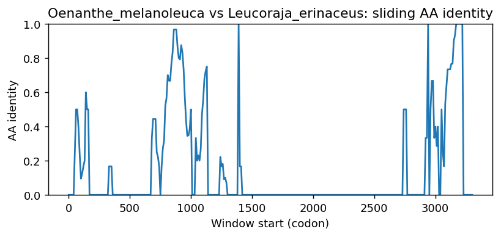
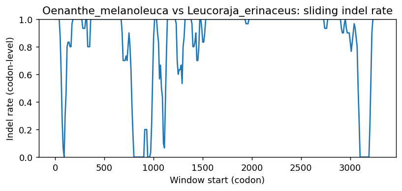
Oenanthe_melanoleuca vs Micropterus_dolomieu
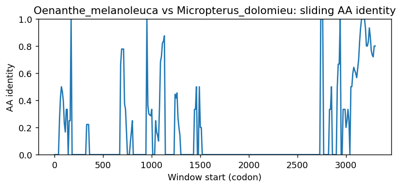
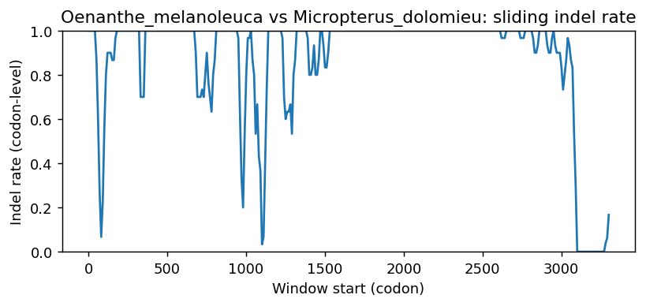
Oenanthe_melanoleuca vs Acanthochromis_polyacanthus
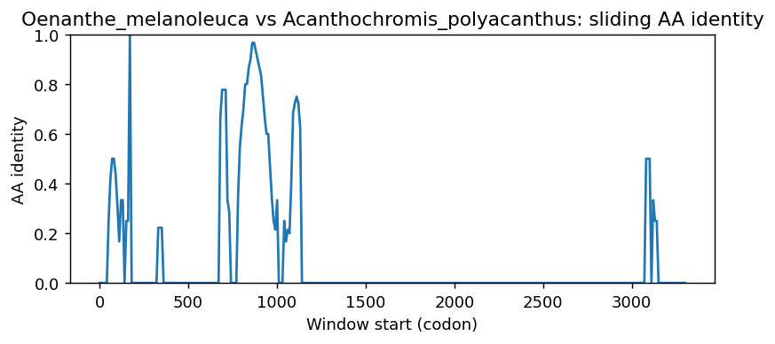
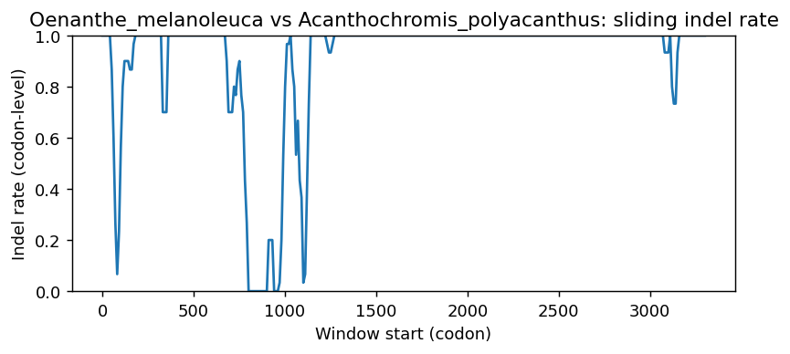
Oenanthe_melanoleuca vs Amblyraja_radiata
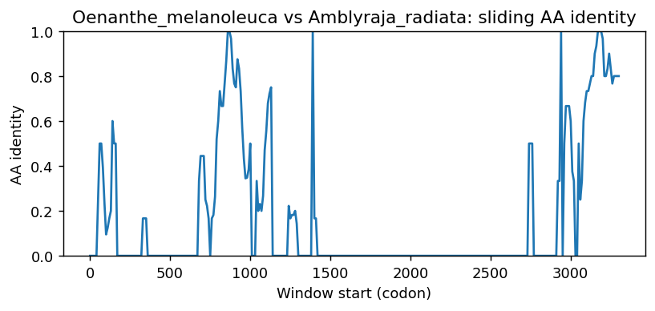
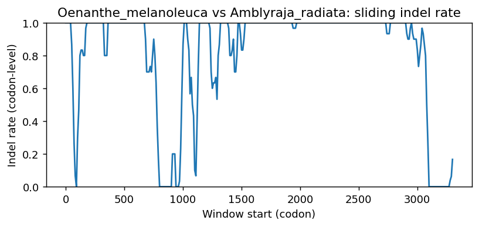
Oenanthe_melanoleuca vs Gadus_chalcogrammus
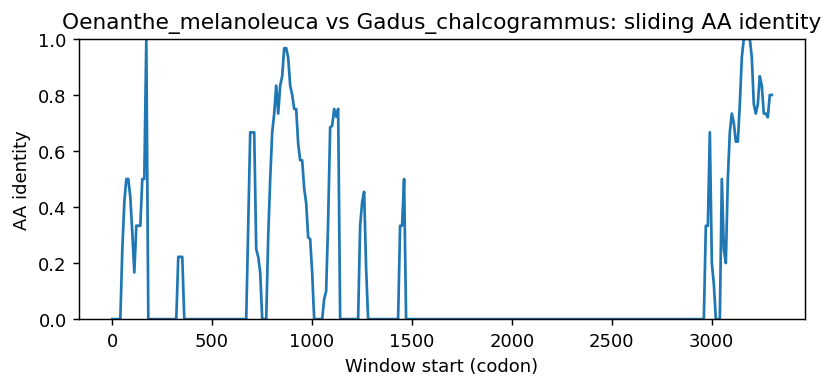
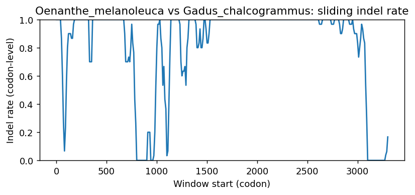
Oenanthe_melanoleuca vs Scyliorhinus_canicula
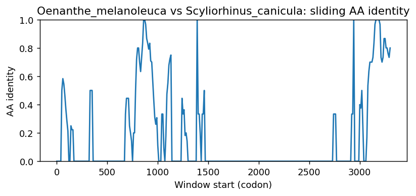
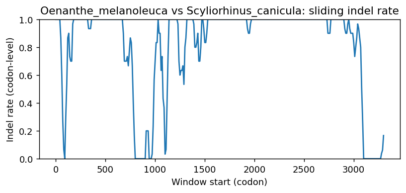
Methods (brief)
- CDS are translated (genetic code 1); proteins aligned by MAFFT when available, otherwise a progressive global aligner (BLOSUM62). Protein MSA is back-translated into a codon MSA.
- Pairwise metrics: AA/NT identities on aligned nongap positions; Ts/Tv; single-hit syn/nonsyn counts; gap events and largest contiguous gap cluster (codons); sliding-window AA identity and codon-level indel rate.
- Per-sequence diagnostics: GC content/skew, CpG density, AA low-complexity fraction via SEG-like entropy windows (win=12, H<2.2), and NT tandem repeats (homopolymers =5; di-nt =4 copies; tri-nt =3 copies).
- Correlations: Pearson/Spearman between AA identity and |GC difference|, mean AA LCR fraction, and mean NT repeat fraction across pairs.
- Risk classifier: combines identity, coverage, longest identical block, low-ID windows, max indel cluster, and up-ranks risk when mean LCR =0.25 or mean repeat =0.10 (soft-masking can remove seeds and reduce sensitivity).
Artifacts: pairwise_metrics.csv, per_sequence_composition.csv, correlations.csv, alignment_protein.faa, alignment_codon.fna.